Introduction
Welcome! This tutorial teaches you how to write your first ObjectARX plug-in for AutoCAD — twice.
What is ObjectARX? It is the C++ toolkit (SDK) for building programs that
run inside AutoCAD. A finished plug-in is an .arx file — really a Windows DLL with a
different extension. AutoCAD loads it, and your code can add commands, draw objects, and react to
what the user does.
You'll do the same small task two ways, so you understand both the fundamentals and the fast path:
- Lesson 1 — From scratch. You set up an empty C++ project by hand and wire up every setting yourself. This is slower, but it shows you exactly what an ObjectARX project is.
- Lesson 2 — With Claude Code. You use an AI assistant and a ready-made "wizard skill" to generate the same kind of project in seconds — then focus on your code instead of the plumbing.
Both lessons end the same way: you type a command in AutoCAD and see a message appear. Start by installing the tools.
Getting Set Up — What to Download
You need three things installed. Install them in this order.
1. AutoCAD 2027
The host program your plug-in runs inside. Download and install it from your Autodesk account (manage.autodesk.com), or get a free version through the Autodesk Education program if you are a student or educator. AutoCAD is 64-bit only — there has been no 32-bit AutoCAD since 2020.
2. The ObjectARX 2027 SDK
This is the free package of C++ header files (.h) and libraries (.lib) you
build against. Get it from the Autodesk Platform Services developer page for AutoCAD:
aps.autodesk.com/developer/overview/autocad.
Go to the APIs section and click on the ObjectARX SDK hyperlink,
click on "View license agreement" and proceed with further steps. Unzip it to a simple path with no spaces, for example C:\ObjectARX 2027\.
Remember this
location — you'll point Visual Studio at it.
Tip. Inside the SDK you'll mainly use two folders: inc (and
inc-x64) for headers, and lib-x64 for libraries.
3. Visual Studio 2026
The editor and C++ compiler (the "IDE"). The free Community edition is fine. During installation, tick the "Desktop development with C++" workload — that's the part that gives you the C++ compiler ObjectARX needs.
| Tool | Why you need it |
|---|---|
| AutoCAD 2027 (64-bit) | Runs your finished plug-in |
| ObjectARX 2027 SDK | Headers + libraries you compile against |
| Visual Studio 2026 + "Desktop development with C++" | Writes and builds the code |
Solved projects. A Solutions folder ships alongside this tutorial
with a finished, working project for every lesson (LessonN_Solved.zip) — handy if you get stuck
partway through. Each lesson links directly to its own zip near the end of that lesson.
Build an ObjectARX App From Scratch
In this lesson you create a new ObjectARX project in Visual Studio 2026 completely by hand and build your first application. There is no template to start from — you'll do every step yourself, so you learn what each piece is for.
The goal is small on purpose: a command called HELLO that prints
"Hello World!" on the AutoCAD command line.
Why do it by hand first. Doing it once by hand is how the settings "click." Lesson 2 shows how the wizard automates all of this for you.
Step 1 — Create the project
- In Visual Studio, choose Create a New Project…
- Search for and select the "Windows Desktop Wizard" template (a plain C++ template), then click Next.
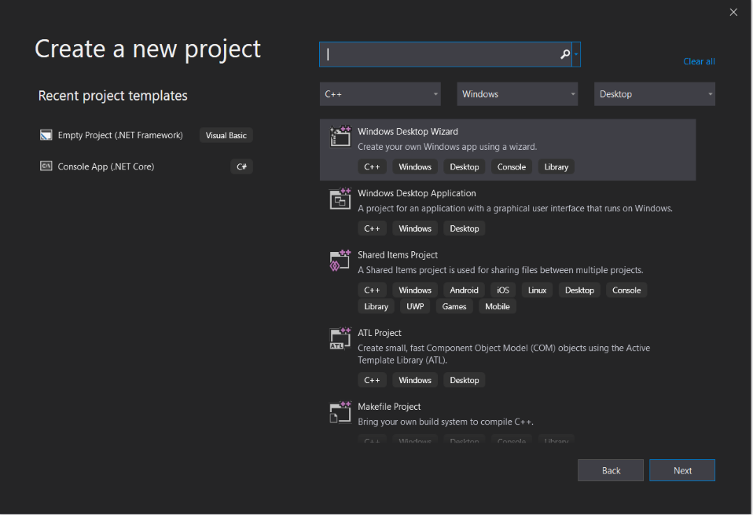
images/l1-01-template.png- Enter a project name — this tutorial uses
Step01— pick a location, and click Create. - In the "Windows Desktop Project" dialog, set Application type to Dynamic Link Library (.dll).
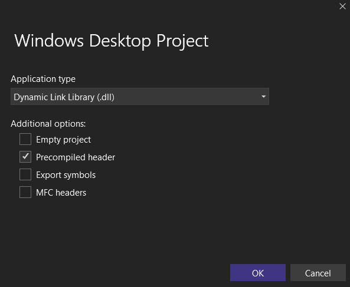
images/l1-02-dlltype.png- Leave the other options unticked and click OK to create the project.
You now have an empty DLL project. On its own it knows nothing about AutoCAD — the next two steps fix that by telling it where the ObjectARX SDK is.
Step 2 — Compiler settings
Open Solution Explorer (menu View → Solution Explorer, or the
shortcut Ctrl+Alt+L). Select the Step01 project, right-click it, and choose
Properties to bring up the project's property pages. At the top, set
Configuration to All Configurations so your changes apply to both Debug
and Release.
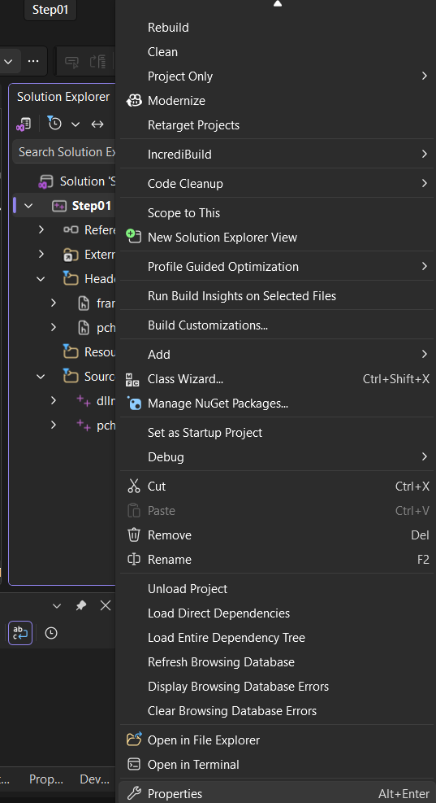
images/l1-03-properties.png- C/C++ → General → Additional Include Directories: add the SDK's include folders, e.g.
C:\ObjectARX 2027\incandC:\ObjectARX 2027\inc-x64. Also set Warning Level to Level 1 to hide warnings that don't matter here. Click OK to apply and close. - C/C++ → Code Generation → Runtime Library: choose Multi-threaded DLL (/MD).
- C/C++ → Preprocessor → Preprocessor Definitions: remove the
_DEBUGsymbol if present. - Configuration Properties → General → Platform Toolset: select v145 (the toolset that matches Visual Studio 2026 / AutoCAD 2027).
Alternative for the include/library paths. Instead of the Additional Include
Directories field, you can set the same paths under Configuration Properties → VC++
Directories: use Include Directories for the SDK's inc folders and
Library Directories for its lib-x64 folder.
The most important rule in all of ObjectARX: always use /MD
(Multi-threaded DLL) — even in Debug builds. AutoCAD itself is always a Release
program, so your plug-in must match it. Using /MDd causes crashes and "heap corruption."
This is why you remove _DEBUG above.
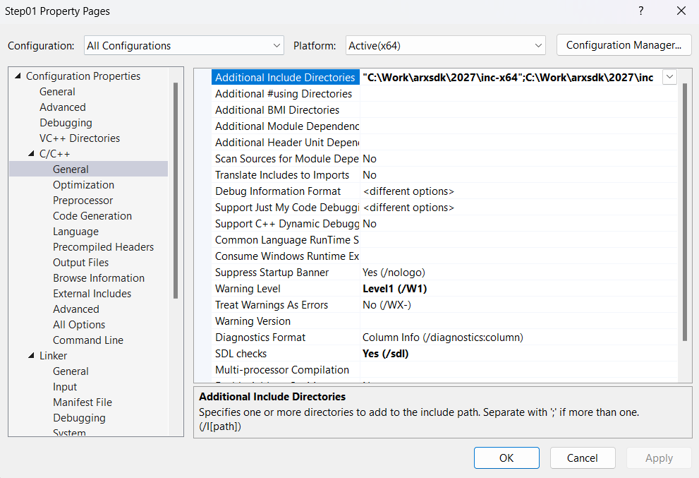
images/l1-04-runtime.png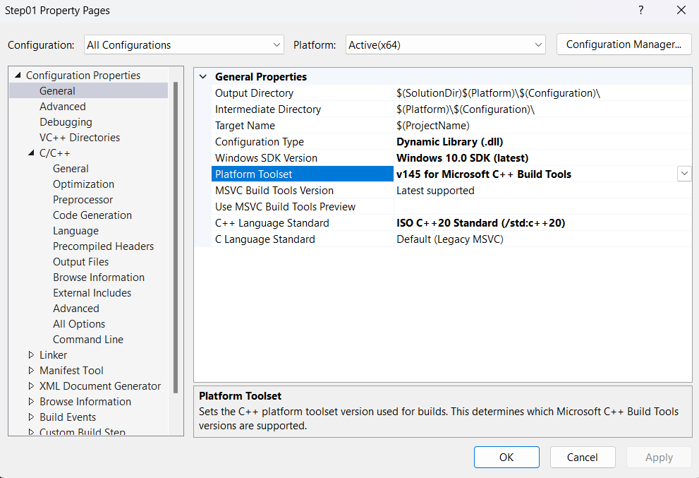
images/l1-05-toolset.pngStep 3 — Linker settings
- Linker → Input → Additional Dependencies: add the core ObjectARX libraries:
rxapi.lib;acdb26.lib;acge26.lib;acad.lib;ac1st26.lib;accore.lib
About that "26" in the library names. The number tracks the AutoCAD release
(2026 → 25, 2027 → 26). If a library name isn't found, open your SDK's lib-x64 folder and use
the exact names you see there.
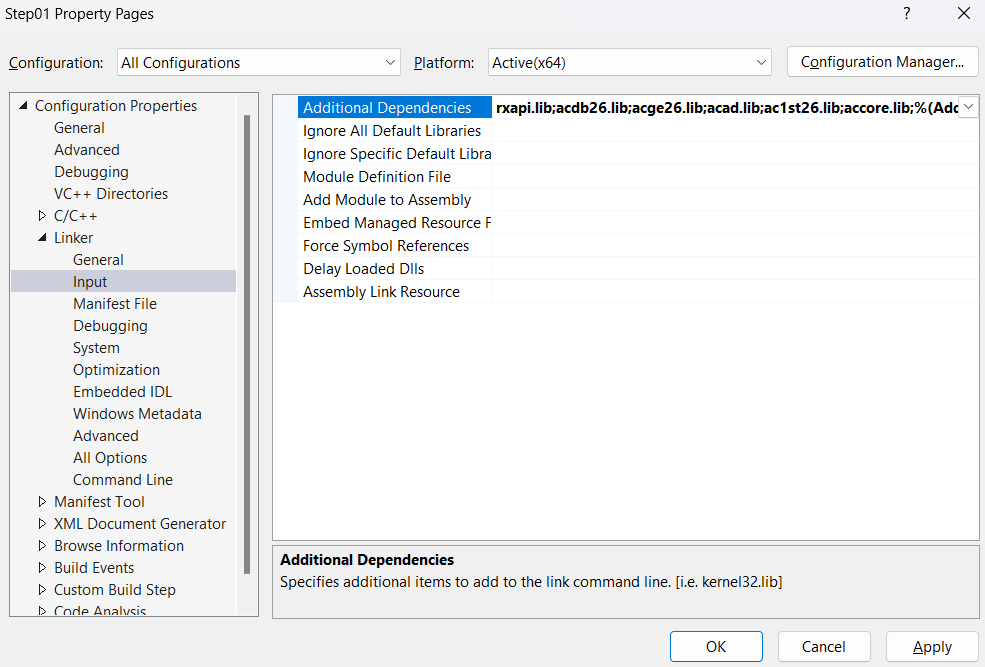
images/l1-06-linklibs.png- Linker → General → Additional Library Directories: add the SDK's library folder,
e.g.
C:\ObjectARX 2027\lib-x64. - Linker → General → Output File (or Advanced → Target File Extension):
change the output extension from
.dllto.arx.
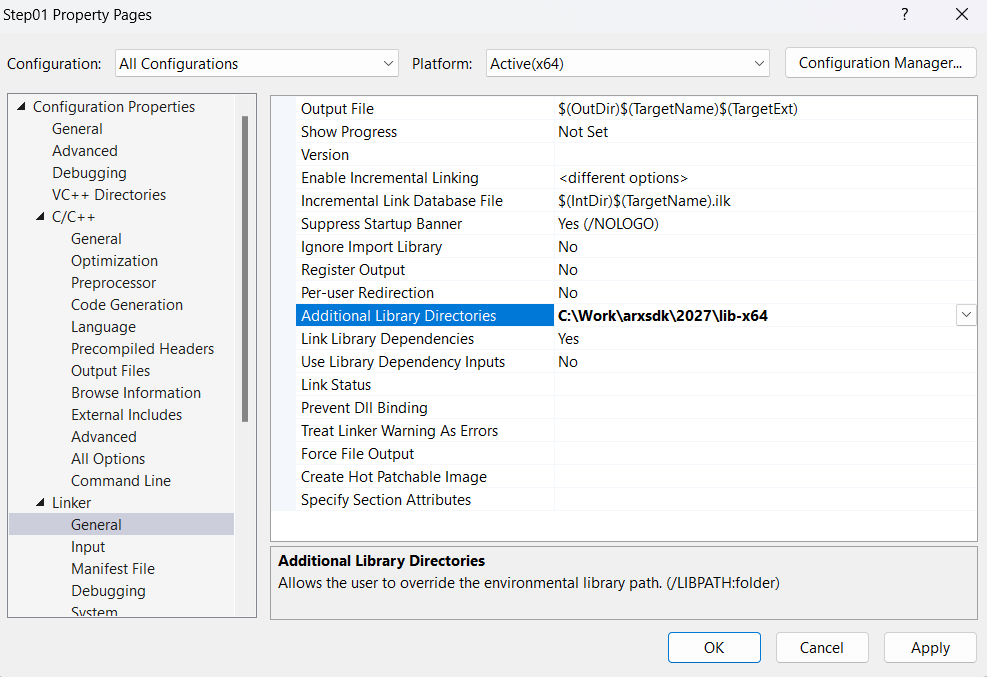
images/l1-07-outputext.pngYour project settings are now complete. Next, the actual code.
Step 4 — Add the code
- From the Project menu, choose Add New Item… (shortcut Ctrl+Shift+A).
- In the "Add New Item" dialog, select C++ File (.cpp).
- Enter
HelloWorldin the Name: box and click Add.
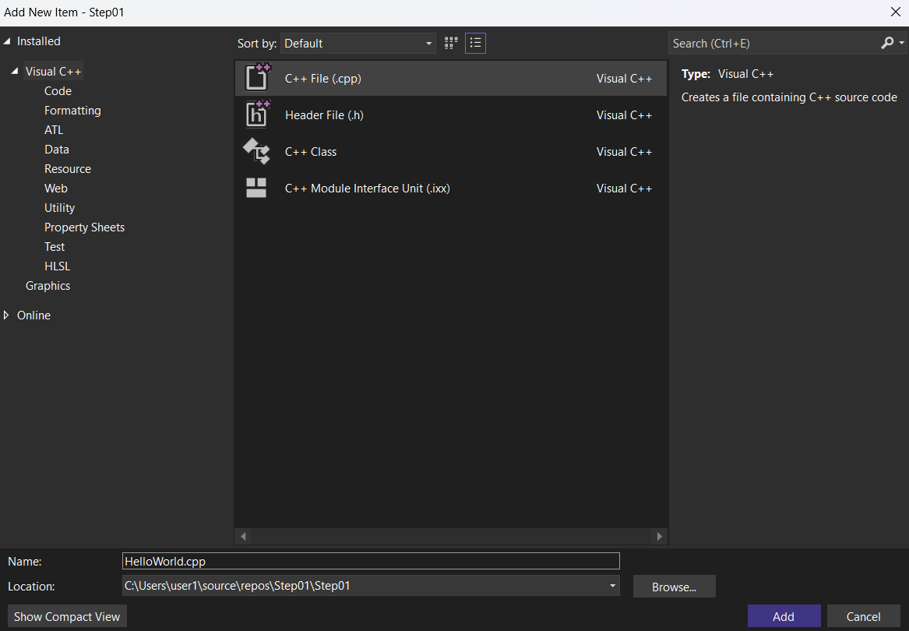
images/l1-08-addfile.pngFirst, include the headers you need. aced.h gives access to AutoCAD's editor services;
rxregsvc.h declares the ObjectARX registration utilities; tchar.h provides the
_T() text macro:
#include "pch.h"
#include "tchar.h"
#include <aced.h>
#include <rxregsvc.h>Declare the three functions you'll write — one to run when AutoCAD loads the app, one when it unloads it, and one that does the actual work:
void initApp();
void unloadApp();
void helloWorld();initApp() registers a new command with AutoCAD. Registering a command gives AutoCAD a new
"entry point" into your app — the word the user types:
void initApp()
{
// register a command with the AutoCAD command mechanism
acedRegCmds->addCommand(_T("HELLOWORLD_COMMANDS"),
_T("Hello"), // global (untranslated) name
_T("Bonjour"), // local (translated) name
ACRX_CMD_TRANSPARENT,
helloWorld); // function to call
}The arguments are: the command group name, the global command name, the localized name, a flag
(ACRX_CMD_TRANSPARENT means it can run while another command is active), and the function to
call when the command runs.
unloadApp() removes that command group when AutoCAD unloads the app — you must clean up the
entry points you added:
void unloadApp()
{
acedRegCmds->removeGroup(_T("HELLOWORLD_COMMANDS"));
}helloWorld() is the command itself. acutPrintf() is ObjectARX's version of C's
printf, aimed at the AutoCAD command line:
void helloWorld()
{
acutPrintf(_T("\nHello World!"));
}Finally, the single most important function in any ObjectARX app: acrxEntryPoint().
Because a plug-in is a DLL (it has no main()), AutoCAD calls this function to send it messages —
"you are being loaded," "you are being unloaded," and so on:
extern "C" AcRx::AppRetCode
acrxEntryPoint(AcRx::AppMsgCode msg, void* pkt)
{
switch (msg)
{
case AcRx::kInitAppMsg:
acrxDynamicLinker->unlockApplication(pkt); // allow unloading
acrxRegisterAppMDIAware(pkt);
initApp();
break;
case AcRx::kUnloadAppMsg:
unloadApp();
break;
default:
break;
}
return AcRx::kRetOK;
}When AutoCAD loads the app (kInitAppMsg), unlock it so it can be unloaded later, mark it
MDI-aware, and register the command. When AutoCAD unloads the app (kUnloadAppMsg), remove the
command.
Step 5 — The .def file
AutoCAD can only find acrxEntryPoint() if the DLL exports it. The simplest way is a
module definition (.def) file.
- From the Project menu, choose Add New Item… (Ctrl+Shift+A).
- In the "Add New Item" dialog, select Module-Definition File (.def).
- Enter
ArxProjectin the Name: box and click Open.
Clear any auto-generated content and add the following to the new file. Every ObjectARX application must export at least these two functions —
acrxEntryPoint and acrxGetApiVersion:
EXPORTS
acrxEntryPoint PRIVATE
acrxGetApiVersion PRIVATENote. You may see linker warning LNK4099 for some libraries during the
build. It's harmless here — you can ignore it.
Step 6 — Build & run
Set the configuration to x64 and build with Build → Build Solution
(Ctrl+Shift+B). If you followed along, you'll get 0 errors and your plug-in appears as
Step01.arx in the project's x64 output folder.
Now load and run it in AutoCAD. Start AutoCAD 2027, open any drawing, and load
Step01.arx using any of these methods:
- Drag the file from Windows Explorer into the AutoCAD window.
- Use the AutoCAD
ARXcommand's Load option at the command line. - From the Tools menu, choose Load Application….
- Type
APPLOAD, browse toStep01.arx, and click Load.
Once loaded, type HELLO and press Enter. You'll see
Hello World! printed on the command line. (Typing BONJOUR works too — that was
the localized name.)
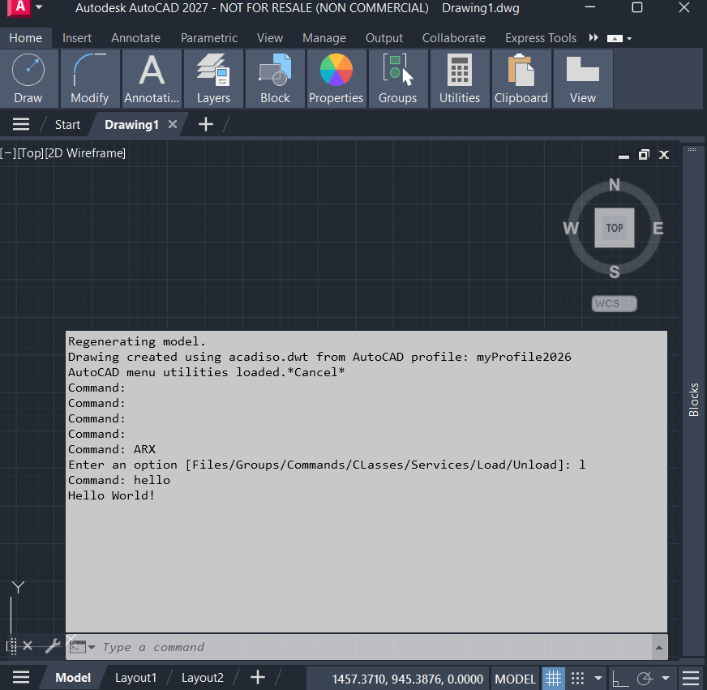
images/l1-09-hello.pngThat's a complete ObjectARX application, built entirely by hand. Notice how much of the work was settings and plumbing, not your actual idea. Lesson 2 removes that busywork. Stuck anywhere above? Compare with the solved project: Solutions\Lesson1_Solved.zip.
Do It Faster with Claude Code
As you just saw, creating an ObjectARX application by hand is a lot of careful clicking. In this lesson you'll get the same kind of project in seconds using Claude Code and a ready-made wizard skill.
We won't repeat Lesson 1 here. The ObjectARX ideas — commands,
acrxEntryPoint(), /MD, the .arx output — are exactly the same. This
lesson focuses only on the tools and on what the generated project gives you on top of
the hand-built one.
Step 1 — What is Claude Code, and how to install it
Claude Code is an AI assistant that runs in your terminal. Unlike a chat window, it can actually work on your computer — read and write files, run commands, and build projects — while asking your permission before anything risky. You tell it what you want in plain English and it does the steps.
Install it
- Open PowerShell (press the Windows key, type PowerShell, Enter).
- Install Claude Code using the official native installer — no Node.js required, and it keeps itself
updated automatically:
irm https://claude.ai/install.ps1 | iex
- Move into a working folder and start it by typing
claude:The first time, it will walk you through signing in.cd C:\Users\you\source\repos claude
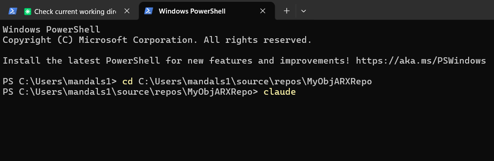
images/l2-01-install.png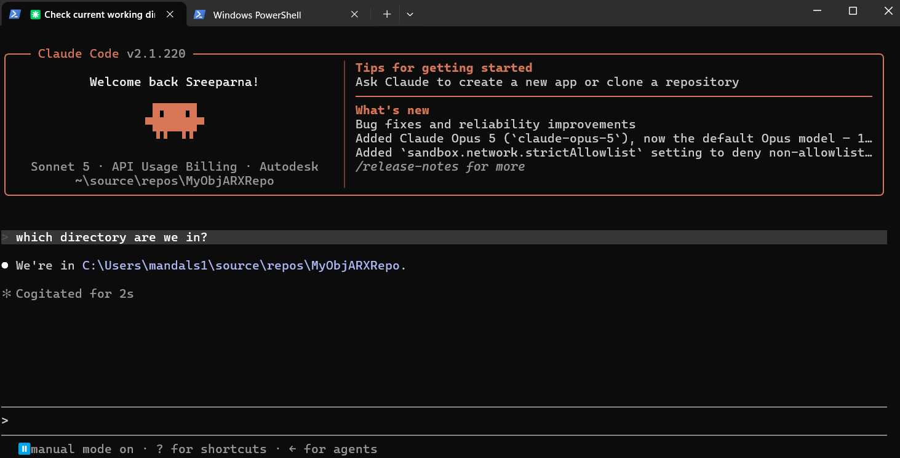
images/l2-02-claude.pngclaude.Prefer npm? npm install -g @anthropic-ai/claude-code still works and
installs the same tool, but it requires Node.js 22+ and doesn't auto-update — you'd run
claude update yourself. The native installer above is Anthropic's recommended method.
Two handy habits inside Claude Code: commands that start with / (a
"slash command") run a skill; and a line that starts with ! runs a shell command yourself, e.g.
!dir.
Step 2 — Get the ObjectARX wizard skill
A skill is a small folder of instructions and scripts that teaches Claude Code how to do a specialized task well. Think of it as a plug-in for the assistant. When a skill is installed, you trigger it with a slash command.
The one you want is acad-arx-wizard. It replaces the old (and, in Visual
Studio 2026, broken) ObjectARX project wizard with scripts that generate the same project files.
Install the skill
- Open the skill in your browser: github.com/autodesk-platform-services/skills → skills/acad-arx-wizard. Go through its README file in detail to understand what it does before installing it.
- Download that repository (green Code → Download ZIP button) and unzip it.
- Copy the
acad-arx-wizardfolder into your personal Claude Code skills folder:That folder is exactly where this skill is installed on this machine.C:\Users\<you>\.claude\skills\acad-arx-wizard - Windows blocks PowerShell scripts by default, and every wizard action runs one. In PowerShell, run this
once to allow locally-installed scripts:
Set-ExecutionPolicy -Scope CurrentUser RemoteSigned - Start (or restart) Claude Code. Type
/and you should seeacad-arx-wizardin the list of available skills.
How to tell it worked: inside Claude Code, run /acad-arx-wizard. If the
skill is installed, Claude greets you and asks which kind of project or class you want.
Faster install, if you already have Node.js. The skill's repository also supports
installing it with a single command instead of the manual download-and-copy above:
npx skills add autodesk-platform-services/skills --global --skill acad-arx-wizard. This needs
Node.js v16.7+ (for the install only) — the manual method above works without it.
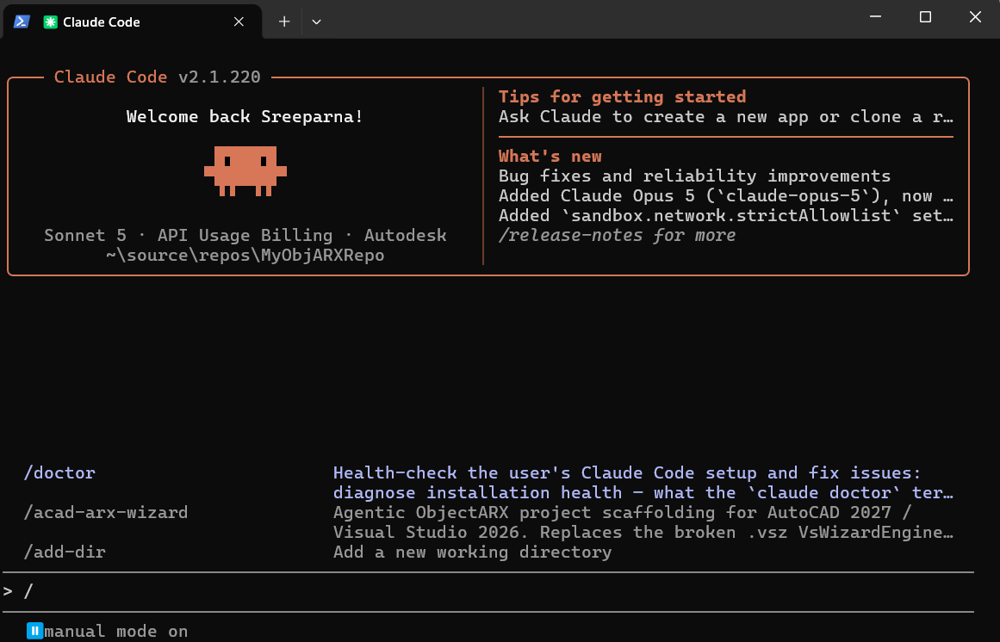
images/l2-03-skill.pngacad-arx-wizard folder inside .claude\skills, or the slash-command list.Good to know about the skill
Why this skill exists. The classic .vsz /
VsWizardEngine wizard (File → New → ObjectARX) is broken in Visual Studio 2026 — a
known VS regression (see
MS
Developer Community #11071541). This skill replaces it for AutoCAD 2027 / VS 2026, running the same kind
of generator, so what you get is a normal, standard ObjectARX project. VS 2022 isn't affected by this bug; if
you're on VS 2022 you can keep using the original
ObjectARX-Wizards installer instead.
It's safe. The skill only writes files into the folder you choose, and Claude Code asks your permission before running anything. It doesn't touch AutoCAD's settings; the one-time PowerShell execution-policy change in Step 2 above is the only Windows-level change, and it's limited to your user account.
Which project type? arx vs dbx vs crx
When you ask for a project, the skill can make three kinds. For your first plug-ins you want arx.
| Type | Runs where | Use it when… |
|---|---|---|
| arx | Inside AutoCAD (with its UI) | …almost always — commands, drawing, reacting to the user. Start here. |
| dbx | No AutoCAD UI (RealDWG / object module) | …you're defining custom objects meant to be shared by other modules. |
| crx | The headless console (accoreconsole.exe) | …you need batch/automation with no user interface. |
What you can ask for
The simple prompt in the next step is enough to start, but the skill accepts more options — just mention them in plain English:
- Project name and location (required).
- Project type —
arx,dbx, orcrx(defaultarx). - MFC —
none,shared, orext(for dialogs/palettes; defaultnone). - ATL/COM or .NET/CLR support, if you plan to expose your code that way.
- RDS prefix — a short unique tag (default
Adsk) added to your names so they don't clash with other developers' plug-ins.
For example: "create a dbx project called Shapes with RDS prefix Xyz."
Under the hood (and when things go wrong). A skill is just a folder you can open:
SKILL.md (instructions), scripts/ (the generators), templates/, and
docs/. Two of those docs are worth knowing about — docs/arx-dev-guide.md explains
the build settings, and docs/learnings.md collects real-world build/link gotchas. If a build
ever fails, check there before panicking. To update the skill, re-download its folder from the GitHub repo.
Step 3 — Scaffold the project
Now let Claude Code build the project. In the Claude Code prompt, just describe what you want in plain English:
/acad-arx-wizard
create a simple ObjectARX project called HelloArxClaude first works out which of the skill's wizards you mean — here, "create a project" maps to the full-project wizard, not one of the add-on class wizards from Step 5 below. It then asks only for the pieces it can't guess — a project name and a location — since everything else (app type, MFC mode, RDS prefix) has a sensible default unless you say otherwise. Once it has what it needs, it runs the wizard script. Behind the scenes it executes a single PowerShell command (you don't have to type it):
powershell.exe -ExecutionPolicy Bypass -NoProfile -File "<skill-root>\scripts\New-ArxApp.ps1" `
-ProjectName HelloArx -OutputPath "C:\Dev" -AppType arx -MfcMode noneIn a couple of seconds it reports something like:
Done. Generated 13 files in: C:\Dev\HelloArx
StdAfx.cpp
StdAfx.h
acrxEntryPoint.cpp
Resource.h
root.rc
ReadMe.txt
DocData.cpp
DocData.h
HelloArx.cpp
HelloArx.vcxproj
Autodesk.arx-2027.props
Autodesk.arx-2027-net.props
crx.props
Next steps:
1. Open HelloArx.vcxproj in Visual Studio 2026
2. Verify the ObjectARX SDK path in Autodesk.arx-2027.props
3. Build -> x64 Debug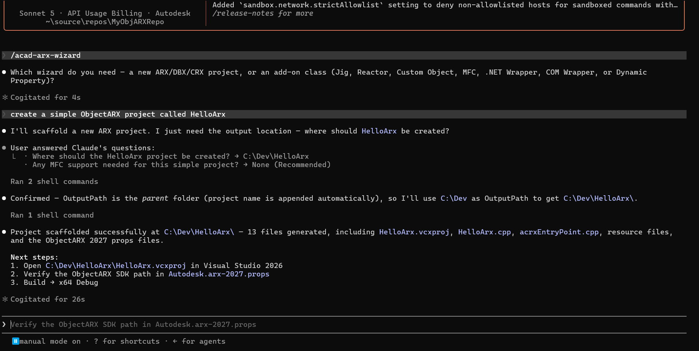
images/l2-04-generated.pngCompare that to Lesson 1: no manual include paths, no linker list, no .def file, no
/MD hunting. The wizard set all of it correctly for AutoCAD 2027.
Step 4 — What the skill's project gives you (beyond Lesson 1)
The hand-built project in Lesson 1 was deliberately bare. The generated HelloArx project is a
more realistic starting point. The extras worth knowing about:
| What you get | Why it helps |
|---|---|
An app class (CHelloArxApp) instead of loose functions |
ObjectARX's modern C++ style. Load/unload handling lives in tidy member functions instead of a big switch. |
Auto-registered commands via the ACED_ARXCOMMAND_ENTRY_AUTO(...) macro |
No more writing initApp()/unloadApp() by hand — add a function, add one macro line, done. |
A precompiled header (StdAfx.h pulling in arxHeaders.h) |
You get all ObjectARX headers at once, and builds are much faster. |
Property sheets (Autodesk.arx-2027.props) instead of hand-typed settings |
All the SDK paths, /MD, C++17, and the .arx extension are set for you and easy to edit in one place. |
A DocData class + DLL plumbing |
Ready-made spots for per-drawing data and the standard COM/DLL entry points — there when you grow beyond "hello." |
In short: the generated project already has everything Lesson 1 set up by hand, plus the extras above. To add your own command you now just write a function and register it with one macro line:
static void AdskMyGroupHello()
{
acutPrintf(ACRX_T("\nHello, ObjectARX!"));
}
// ...and at the bottom of the file:
ACED_ARXCOMMAND_ENTRY_AUTO(CHelloArxApp, AdskMyGroup, Hello, Hello, ACRX_CMD_MODAL, NULL)Naming rule (same idea as Lesson 1). The function name is the command
group + the command name: group AdskMyGroup + command Hello
→ AdskMyGroupHello.
Step 5 — Add-on class wizards (beyond a full project)
Creating a whole project — what you just did — is only one of the things the skill can do. The same
acad-arx-wizard skill can also add ready-made class files to an existing
project: the ObjectARX building blocks you'll reach for as you grow. You don't run a separate tool — you
just ask Claude Code in plain English, and it drops the generated .h/.cpp files
into your project folder for you to include (right-click the project → Add → Existing Item).
Here are the add-ons in plain terms. You don't need to understand them fully yet — just know they exist.
| Add-on | What it's for (beginner view) | Say something like… |
|---|---|---|
| Custom Object | Your own kind of object stored in the drawing — a subclass of AcDbEntity. | "add a custom object called AdskEmployee" |
| Reactor | Code that reacts to events — runs when an object is modified, or the drawing/database changes. | "add a database reactor to HelloArx" |
| Jig | Interactive dragging — lets the user drag and preview an object with the mouse before placing it. | "add a jig for placing a line" |
| MFC dialog / palette | A user-interface window — a dialog box, tool palette, or dockable panel. | "add an MFC dialog" |
| .NET wrapper | Lets .NET (C#) code call into your C++ object — a managed C++/CLI wrapper. | "add a .NET wrapper for my custom object" |
| COM wrapper | Exposes your object to COM/automation clients such as VBA or scripting. | "add a COM wrapper object" |
| Dynamic property | Adds runtime ("dynamic") properties to objects, similar to dynamic-block parameters. | "add a dynamic property class" |
You don't need these yet. For your first commands the full project is all you need. Come back to this list when you're ready to store custom data (Custom Object), respond to events (Reactor), let users drag geometry (Jig), or add a UI (MFC). Each one is a single request away.
Step 6 — Build & run
- Open
HelloArx.vcxprojin Visual Studio 2026. - If your SDK/AutoCAD live in non-default folders, open
Autodesk.arx-2027.propsand fix theArxSdkDirandAcadDirlines.
Heads up — a build error can show up here. The generated
Autodesk.arx-2027.props ships with a placeholder ArxSdkDir
(C:\ObjectARX\). If you skip the fix in point 2 above, Build Solution fails with something
like:
MSB4019: The imported project "C:\ObjectARX\inc\arx.props" was not found. Confirm that the
expression in the Import declaration "$(ArxSdkDir)\inc\arx.props", which evaluated to
"C:\ObjectARX\\inc\arx.props", is correct, and that the file exists on disk.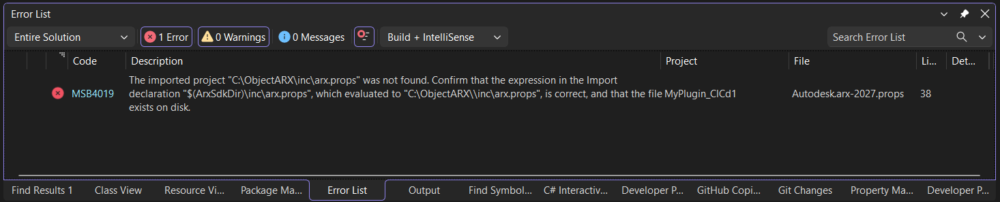
images/l2-05b-sdkerror.pngIf you hit this, you don't need to hand-edit the props file yourself — just tell Claude Code where your real SDK lives and let it make the fix. In the Claude Code prompt, paste the error and say something like:
I got this build error: [paste the MSB4019 error above].
My ObjectARX 2027 SDK is actually installed at C:\Work\arxsdk\2027 — update the
ArxSdkDir path in Autodesk.arx-2027.props to match.Claude Code will check that the folder you give it actually contains arx.props,
inc-x64, and lib-x64, then update the ArxSdkDir line for you.
- Build x64 Debug (Ctrl+Shift+B). The output is
x64\Debug\AdskHelloArx.arx. - In AutoCAD:
APPLOADthat file, then typeMYCOMMAND.
Why MYCOMMAND and not HELLO. Unlike Lesson 1's
hand-written project, the wizard's acrxEntryPoint.cpp doesn't ship a command literally named
HELLO. It ships three stub commands with empty bodies —
MYCOMMAND, MYPICKFIRST, and MYSESSIONCMD — plus a stub Lisp function,
all placeholders for you to fill in (look for AdskMyGroupMyCommand in the file). Typing
MYCOMMAND at the command line is the real smoke test here: it confirms the .arx
loaded, On_kInitAppMsg ran, and the command table registered and dispatched correctly — even
though the stub itself does nothing visible yet.
If MYCOMMAND runs with no errors (AutoCAD just returns to a blank command line), the plug-in
loaded and works — same underlying proof as Lesson 1's HELLO, you just don't get a printed
message yet, because the stub body is empty.
Want to actually see something happen? Ask Claude Code to fill in the stub. In the Claude Code prompt:
Add a print statement to the MYCOMMAND stub (AdskMyGroupMyCommand) in acrxEntryPoint.cpp using
acutPrintf, then rebuild HelloArx and tell me how to test it.Claude will edit the function body — typically something like:
static void AdskMyGroupMyCommand()
{
acutPrintf(ACRX_T("\nHello from HelloArx!"));
}then rebuild the project and hand you back the APPLOAD + MYCOMMAND steps to
confirm it. (Note it uses ACRX_T, not Lesson 1's _T — this project has no
tchar.h/MFC include pulling _T in.)
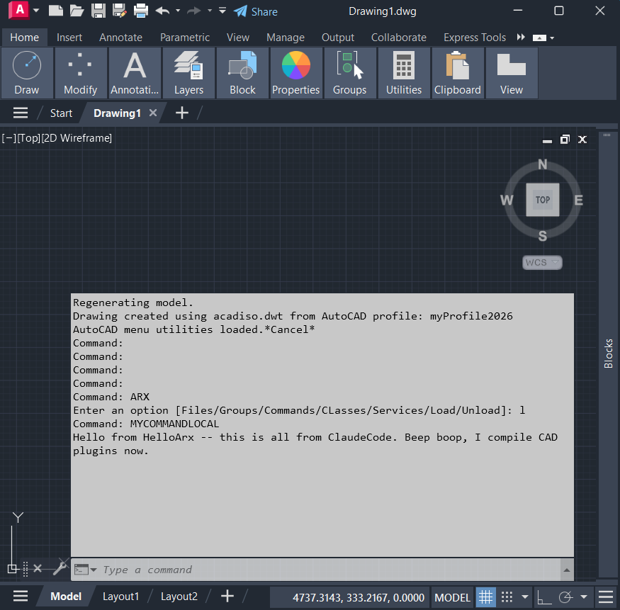
images/l2-05-hello.pngDebug tip. The property sheet already points the debugger at AutoCAD, so pressing
F5 launches AutoCAD with the debugger attached. APPLOAD your .arx,
set a breakpoint, run MYCOMMAND, and step through your code.
Getting Input & Selecting Entities
So far your commands just printed a message. Real commands ask the user for something — a
number, a choice, a point, or an object in the drawing. In this lesson you'll add two commands to the
HelloArx project from Lesson 2 and learn ObjectARX's input and selection functions.
Objectives
MYINPUT— demonstrate input functions:- Ask for an integer, but disallow negative and zero values.
- Ask for a real number, but also accept the keywords
PI,A,B,C— defaulting toCif the user just presses Enter. The value becomes 3.14 forPI, 10.0 forA, 11.0 forB, 12.0 forC. - Handle the user pressing Esc gracefully.
- Print the integer and the real value on the command line.
MYSELECT— demonstrate entity selection:- Ask the user to select a single entity.
- If one is selected, show its Object ID (the first element of the returned
ads_namedata type).
The functions you'll use
ObjectARX gives you a family of acedGetXxx input functions and a set of selection functions.
The full list is in the ObjectARX Help; here are the ones relevant to this lesson:
| Function | What it does |
|---|---|
acedInitGet | Sets rules for the next acedGetXxx call (e.g. "no negatives") and registers keywords. |
acedGetInt | Prompts for an integer. |
acedGetReal | Prompts for a real (floating-point) number. |
acedGetInput | Retrieves the keyword the user typed after a "keyword" result. |
acedEntSel | Lets the user pick a single entity in the drawing. |
The key idea — return codes. Every acedGetXxx function returns a status
code that tells you what the user did: RTNORM (entered a normal value),
RTNONE (pressed Enter with no value), RTKWORD (typed a keyword), or
RTCAN (pressed Esc). Checking this code is how you handle every case correctly.
Step 1 — Add the two commands
You add commands exactly the way Lesson 2 showed: a function, plus one registration macro line. The quickest route is to ask Claude Code to do it for you — from inside the project, just say:
add two commands to HelloArx: MYINPUT and MYSELECTClaude edits acrxEntryPoint.cpp, adding a function and an
ACED_ARXCOMMAND_ENTRY_AUTO line for each. (You can also add them by hand — the next two steps
show the code to put in each function.) The scaffolding looks like this:
// inside class CHelloArxApp { ... }:
static void ADSKArxLesson3_MyInput();
static void ADSKArxLesson3_MySelect();
// at the bottom of the file, next to the HELLO entry:
ACED_ARXCOMMAND_ENTRY_AUTO(CHelloArxApp, ADSKArxLesson3, _MyInput, MyInput, ACRX_CMD_MODAL, NULL)
ACED_ARXCOMMAND_ENTRY_AUTO(CHelloArxApp, ADSKArxLesson3, _MySelect, MySelect, ACRX_CMD_MODAL, NULL)Straight from the ObjectARX training samples. The two functions below are the same
functions (logic included) as Autodesk's own Step02_Solved sample in the ObjectARX training
materials, renamed to fit this tutorial's own numbering — ADSKArxLesson3_MyInput /
ADSKArxLesson3_MySelect. That's also why the group name (ADSKArxLesson3) and global
command name (_MyInput / _MySelect) look different from the
AdskMyGroup pattern used for MYCOMMAND in Lesson 2 — both are valid, it's just a
different sample's naming choice.
Step 2 — The MYINPUT command
Here is the full function. Read it top to bottom — each block matches one objective from the overview.
Heads-up: tchar.h isn't automatic. The skill's template doesn't pull in
tchar.h by default — TCHAR/_T() below won't compile until you add
#include <tchar.h> yourself, near the top of acrxEntryPoint.cpp (Lesson 4's
utility functions will need the same fix).
static void ADSKArxLesson3_MyInput()
{
int stat, iValue;
double rValue;
TCHAR kWord[133];
acedInitGet(RSG_NONEG | RSG_NOZERO, _T(""));
if (acedGetInt(_T("\nEnter an integer value: "), &iValue) != RTNORM)
return;
rValue = 12.0;
acedInitGet(RSG_NOZERO, _T("PI A B C"));
stat = acedGetReal(_T("\nEnter a real value [PI/A/B/C] <C>: "), &rValue);
switch (stat) {
case RTCAN: // User termination
return;
case RTKWORD: // Got a keyword
if (acedGetInput(kWord) != RTNORM)
return;
if (!_tcscmp(_T("PI"), kWord))
rValue = 3.14;
else if (!_tcscmp(_T("A"), kWord))
rValue = 10;
else if (!_tcscmp(_T("B"), kWord))
rValue = 11;
else if (!_tcscmp(_T("C"), kWord))
rValue = 12;
break;
case RTNONE:
acutPrintf(_T("\nTake default rValue %lf"), rValue);
break;
case RTNORM:
break;
default:
return;
}
acutPrintf(_T("\nInteger : %d"), iValue);
acutPrintf(_T("\nReal : %lf"), rValue);
}Three things worth noticing:
acedInitGetis "one-shot." Its rules and keywords apply only to the nextacedGetXxxcall, so you call it again before the real-number prompt — and note the rule changes too:RSG_NONEG | RSG_NOZEROfor the integer, justRSG_NOZEROfor the real (negative reals are allowed here).- Keywords come from a space-separated string.
acedInitGet(RSG_NOZERO, _T("PI A B C"))tells AutoCAD those four words are valid answers. When the user types one,acedGetRealreturnsRTKWORDand you read it back withacedGetInput. - Every
statvalue is handled explicitly.RTCAN(Esc) and the unnameddefaultcase both bail out silently;RTNONE(bare Enter) prints that it's falling back to the pre-set default (rValue = 12.0, i.e.C);RTNORMjust falls through, sincerValuealready holds what the user typed.
Step 3 — The MYSELECT command
acedEntSel asks the user to pick one entity. It fills an ads_name (the entity's
name) and the pick point, and returns a status code just like the input functions.
static void ADSKArxLesson3_MySelect()
{
ads_name en;
ads_point pt;
if (acedEntSel(NULL, en, pt) != RTNORM)
return;
acutPrintf(_T("\nYou selected entity ID: %ld"), en[0]);
}Note the NULL prompt. Passing NULL as acedEntSel's
prompt string means AutoCAD uses its own default prompt ("Select object:") instead of a custom one. Any
non-RTNORM result (Esc, missed pick, nothing selected) is treated the same way here — a silent
return — which is simpler than Lesson 3's earlier style of printing a distinct message per case, but gives
the user less feedback.
Going further. That raw number identifies the entity for this session. In real code
you usually convert it to a database id with acdbGetObjectId(objId, en), then open the object
to read or change it — the subject of later ObjectARX lessons.
Step 4 — Build & test
- Build x64 Debug (Ctrl+Shift+B) and
APPLOADthe rebuiltAdskHelloArx.arxin AutoCAD (unload the old copy first, or restart AutoCAD). - Type
MYINPUT. Try each case: a negative number (rejected),0(rejected), a valid integer, then a real number — or a keyword likeA, or just Enter for theCdefault. Confirm the printed values are right. - Type
MYSELECTand click any object. Confirm it prints an Object ID.
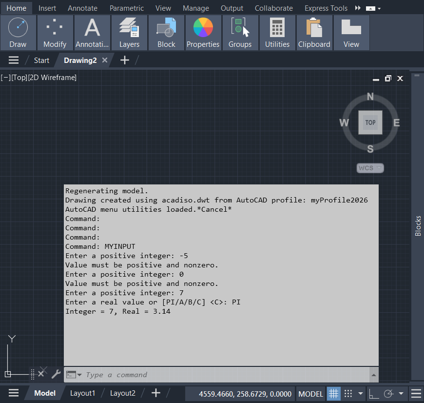
images/l3-01-myinput.png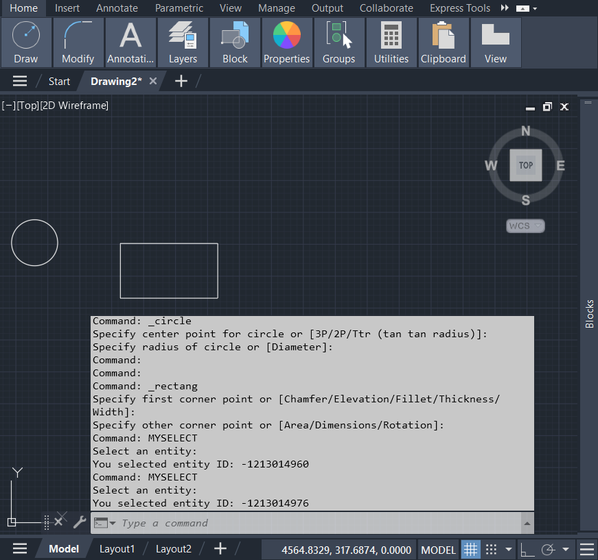
images/l3-02-myselect.pngYou've now handled the two things almost every command needs: getting values from the user and letting them point at the drawing. Stuck on either command? Compare with the complete solution: Solutions\Lesson3_Solved.zip.
Symbol Tables — Layers & Blocks
Until now your commands only talked to the user. In this lesson they talk to the drawing database — creating a layer, defining a block, and changing objects already in the drawing. This is where ObjectARX gets genuinely useful.
You'll add two commands to a fresh project:
CREATE— makes a layer namedUSERand a block definition namedEMPLOYEE(a little "happy face" drawn from 3 circles and 1 arc).SETLAYER— finds everyEMPLOYEEblock placed in the drawing and moves it onto theUSERlayer.
images/l4-01-employee.pngRead this before you write any database code. Any object you open for read or write must be closed when you're done, and any iterator you create must be deleted. Forgetting to close objects will crash AutoCAD. Every "open" in this lesson is paired with a "close" — keep it that way.
Learn-by-doing. This lesson gives you the algorithm and the data — not
the finished code. Try to write each function yourself. If you get stuck, a complete solution is in
Solutions\Lesson4_Solved (or just ask Claude Code to fill in a function and then read what it
wrote).
New database classes you'll meet
| Class | What it represents |
|---|---|
AcDbLayerTable / AcDbLayerTableRecord | The table of layers, and one layer in it. |
AcDbBlockTable / AcDbBlockTableRecord | The table of block definitions, and one definition (also Model Space itself). |
AcDbBlockReference | An instance of a block placed in the drawing (what INSERT creates). |
AcDbBlockTableRecordIterator | Steps through the entities inside a block record (e.g. Model Space). |
AcDbCircle / AcDbArc | The circle and arc entities that make up the happy face. |
Step 1 — Create the template project (with the skill)
Use the Claude Code skill from Lesson 2 to create the project. In Claude Code:
/acad-arx-wizard
create a simple ObjectARX arx project called Lesson4 in C:\Users\<you>\source\reposThat gives you the standard project (the same files you saw in Lesson 2). Everything after this is ordinary ObjectARX coding.
Step 2 — Utility functions
In this exercise you'll implement two utility functions that the CREATE command will rely
on: createLayer() and createBlockRecord(). You'll
implement these in a new file utilities.cpp, with the declarations in a header file
utilities.h.
Creating the header and implementation files
Create a new header file named utilities.h. This file will contain the
utility functions' declarations. Add the following code:
#include "StdAfx.h"
//Declaration of createLayer():
Acad::ErrorStatus createLayer (const TCHAR* layerName, AcDbObjectId& layerId);
//Declaration of createBlockRecord():
Acad::ErrorStatus createBlockRecord (const TCHAR* name);Create a new .cpp file named utilities.cpp. Before adding the
implementations, add this include:
#include "utilities.h"Heads-up: tchar.h isn't automatic. The skill's template doesn't pull in
tchar.h by default — TCHAR/_T() below won't compile until you add
#include <tchar.h> yourself, near the top of utilities.h and
acrxEntryPoint.cpp (same fix as Lesson 3's MYINPUT).
Implementing createLayer() in utilities.cpp
Add the following function description:
//
// Create a new layer or return the ObjectId if it already exists
//
// In :
// const TCHAR* layerName : layer name
// Out :
// AcDbObjectId& layerId : ObjectId of the created or existing layer
//Algorithm for createLayer()
- Get the layer table from the current working database (
AcDbLayerTable,AcDbDatabase::getLayerTable()). To get the current working database, useacdbHostApplicationServices()->workingDatabase(). - Check to see if a layer of the same name already exists (
AcDbLayerTable::getAt()). If it does, get its object ID and return it using the second argument of ourcreateLayer()function. - If the layer does not already exist then we have to create it and add it to the layer table. You create
a new layer (
AcDbLayerTableRecord) with thenewoperator. Since we will modify the layer table, the layer table will need to be opened for write. The newly created Layer Table Record will be added to the layer table withAcDbLayerTable::add(). We will return the object ID of the newly created layer — after it has been closed, of course.
Implementing createBlockRecord() in utilities.cpp
Add the following function description:
//
// Create a new block table record and add the entities of the employee to it
//
// In :
// const TCHAR* name : Name of block table record
//Algorithm for createBlockRecord()
- Get the block table from the current working database (
AcDbBlockTable,AcDbDatabase::getBlockTable()). - Check if the block table record already exists (
AcDbBlockTable::has()). If it exists, return an error status (Acad::eDuplicateKey). Don't forget to close the block table. - Create a new block table record with the
newoperator and add it to the block table (AcDbBlockTableRecord,AcDbBlockTable::add()). (Since we modify the block table it must be opened for write). Initialize the new block table record. Set the origin to(0,0,0)(AcDbBlockTableRecord::setOrigin(AcGePoint3d::kOrigin)). Set its name. If the block table record was successfully added to the AutoCAD database, you can close the block table. - Create the "EMPLOYEE" entities and append them to the new block table record
(
AcDbBlockTableRecord::appendAcDbEntity()). The "EMPLOYEE" entities are three circles (AcDbCircle) and an arc (AcDbArc) with the characteristics outlined in the table below. Make the face yellow, eyes blue, and mouth red (AcDbEntity::setColorIndex()). - Don't forget to close the newly created entities, block table record and block table.
PIcan be defined as3.141592654.
Data for "EMPLOYEE" block definition
Block name EMPLOYEE. Block origin (0, 0, 0).
| Part | Entity (colour) | Centre | Radius | Start angle | End angle |
|---|---|---|---|---|---|
| Face | AcDbCircle (yellow) | (0, 0, 0) | 1.0 | — | — |
| Left eye | AcDbCircle (blue) | (0.33, 0.25, 0) | 0.1 | — | — |
| Right eye | AcDbCircle (blue) | (-0.33, 0.25, 0) | 0.1 | — | — |
| Mouth | AcDbArc (red) | (0, 0.5, 0) | 1.0 | PI + (PI × 0.3) | PI + (PI × 0.7) |
No extra includes needed. AcDbLayerTable/AcDbLayerTableRecord
require the include file <dbsymtb.h>, and AcDbCircle/AcDbArc
require <dbents.h> — but you don't have to add either include. That's because
StdAfx.h (included from utilities.h) already includes arxHeaders.h,
which has include statements for every ObjectARX header.
Try to implement these two functions yourself. Don't forget the ObjectARX online help. If you get stuck,
compare against Solutions\Lesson4_Solved and study the code in utilities.cpp.
Step 3 — The CREATE and SETLAYER commands
After implementing the utility functions, create two new commands named CREATE and
SETLAYER. To use the utility functions in your commands, add this to
acrxEntryPoint.cpp:
#include "utilities.h"Implementation of the commands
Command "CREATE"
Create a function named AdskLesson4_CREATE() in acrxEntryPoint.cpp, which will
be called when the command CREATE is executed. Implement the following in the function
AdskLesson4_CREATE().
Algorithm
- The implementation will call our user defined utility function
createLayer()with parameter"USER"as layer name, and user defined functioncreateBlockRecord()with parameter"EMPLOYEE"as block name. - After the layer table changes, call the ObjectARX global function
applyCurDwgLayerTableChanges(). This function will force AutoCAD to update itself to use any changes made to any layer table records in the drawing currently in the AutoCAD editor.
Command "SETLAYER"
Create a function named AdskLesson4_SETLAYER() in acrxEntryPoint.cpp, which
will be called when the command SETLAYER is executed. Implement the following in the function
AdskLesson4_SETLAYER() (which changes the layer of "EMPLOYEE" block references).
Algorithm
- Open the block table of the current working database.
- Get the MODEL SPACE block table record (
AcDbBlockTable::getAt(),ACDB_MODEL_SPACE). - Obtain a block table record iterator (
AcDbBlockTableRecordIterator,AcDbBlockTableRecord::newIterator()) to iterate through the MODEL SPACE block table record. - Iterate through the MODEL_SPACE (
AcDbBlockTableRecordIterator::start(),AcDbBlockTableRecordIterator::done(),AcDbBlockTableRecordIterator::step()). - To open objects for read or write operations use
acdbOpenObject(). - Obtain the entity (
AcDbBlockTableRecordIterator::getEntity()). - Check if the entity is a block reference (
pEnt->isA() != AcDbBlockReference::desc()). - Obtain the block table record of the reference (
AcDbBlockReference::blockTableRecord()) and check if the block table record's name is"EMPLOYEE". - Change the layer (
setLayer()). - Don't forget to close any objects you opened and delete the iterator!
Naming reminder. The function name is group + global command name — the
same idea as Lesson 3's ADSKArxLesson3_MyInput. Group AdskLesson4 + global command
_CREATE → AdskLesson4_CREATE(); group AdskLesson4 + global command
_SETLAYER → AdskLesson4_SETLAYER():
ACED_ARXCOMMAND_ENTRY_AUTO(CLesson4App, AdskLesson4, _CREATE, CREATE, ACRX_CMD_TRANSPARENT, NULL)
ACED_ARXCOMMAND_ENTRY_AUTO(CLesson4App, AdskLesson4, _SETLAYER, SETLAYER, ACRX_CMD_TRANSPARENT, NULL)Try to implement all the above functions yourself. Don't forget the ObjectARX online help for quick
reference. If you get stuck, compare against Solutions\Lesson4_Solved and study the code in
the acrxEntryPoint.cpp file.
Step 4 — Build & test
- Build x64 Debug and
APPLOADthe.arxin a new drawing. - Run
CREATE— it makes theUSERlayer and theEMPLOYEEblock. - Run LAYER command to check the new layer and run BLOCKSPALETTE command to see the new block
- Run AutoCAD's
INSERTcommand and place one or moreEMPLOYEEblocks on layer0. - Run
SETLAYER— the EMPLOYEE blocks move to theUSERlayer. - Check with the
LISTcommand (it shows each object's layer), or toggle layers withLAYER.
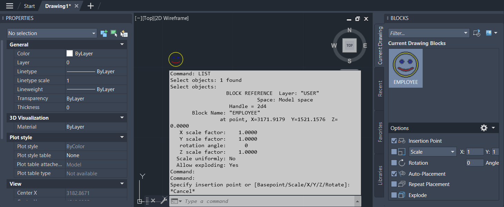
images/l4-02-setlayer.pngYou've now created database objects and modified existing ones — the foundation for almost everything else in ObjectARX. Stuck on any function? Compare with Solutions\Lesson4_Solved.zip.
Dictionaries & Xrecords
Lesson 4 created graphical objects. This lesson stores non-graphical data — a list of names — inside the drawing itself, so it's saved with the DWG and available every time the file is opened.
Two building blocks make this possible:
- The Named Objects Dictionary (NOD) — a top-level dictionary that every drawing has, where plug-ins store non-graphical data under named keys.
AcDbXrecord— a flexible object for holding arbitrary data. It is a much improved mechanism for storing data than the older (and still used) Extended Entity Data.
Recommended pattern. Rather than dropping items straight into the NOD, the
recommended approach is to create your own base-level AcDbDictionary inside
the NOD and then populate that with your data. Here you'll create a base-level dictionary keyed
ADSK_EMPLOYEE_DICTIONARY to hold employee records, storing each employee as an (empty)
AcDbXrecord under the employee's name. Keeping the records together in one dictionary lets you
iterate through every employee quickly and easily.
You'll add three commands that manage this employee dictionary:
ADDENTRY
- Checks whether the base-level dictionary
ADSK_EMPLOYEE_DICTIONARYexists in the NOD; if it does not,ADDENTRYcreates it. - Prompts for an employee name and adds an
AcDbXrecordfor that employee. If the employee already exists inADSK_EMPLOYEE_DICTIONARY, the request is ignored.
LISTENTRIES
- Checks whether the base-level dictionary exists; if it does not, the command stops.
- Uses an
AcDbDictionaryIteratorto step through the entries and print the name of every employee stored there.
REMOVEENTRY
- Prompts the user for an employee name.
- Checks whether the base-level dictionary exists in the NOD; if it does not, the command stops.
- Removes that employee's entry if it is present.
The object relationship you're building inside the drawing:
NOD (AcDbDictionary)
|_ "ADSK_EMPLOYEE_DICTIONARY" (AcDbDictionary)
|_ "Charles" (AcDbXrecord)
|_ "Cyrille" (AcDbXrecord)
|_ "Mikako" (AcDbXrecord)
|_ "Fenton" (AcDbXrecord)
|_ "Gopinath" (AcDbXrecord)
|_ "Kean" (AcDbXrecord)
|_ "Varadan" (AcDbXrecord)Same golden rule as Lesson 4. Every object you open must be closed, and every iterator you create must be deleted. Leaking open objects crashes AutoCAD.
Learn-by-doing. This lesson gives you the algorithm for each command,
not the finished code. Try writing them yourself; a complete solution is in
Solutions\Lesson5_Solved.
New classes you'll meet
| Class / call | What it represents |
|---|---|
AcDbDatabase::getNamedObjectsDictionary() | Gets the drawing's top-level NOD. |
AcDbDictionary | A set of key → object entries (`getAt`, `setAt`, `has`, `newIterator`). |
AcDbXrecord | The data object stored under each employee name. |
AcDbDictionaryIterator | Steps through a dictionary's entries (`done`, `next`, `name`). |
Step 1 — Create the template project (with the skill)
As before, scaffold the project with the Claude Code skill from Lesson 2:
/acad-arx-wizard
create a simple ObjectARX arx project called Lesson5 in C:\Users\<you>\source\reposNo extra source files are needed this time — all three commands live directly in
acrxEntryPoint.cpp.
Step 2 — The three commands
Add a function per command in acrxEntryPoint.cpp and register each with
ACED_ARXCOMMAND_ENTRY_AUTO (the Lesson 2 pattern). They all work on a sub-dictionary keyed
ADSK_EMPLOYEE_DICTIONARY.
ADDENTRY — algorithm
- Prompt for an employee name (
acedGetString()). - Get the NOD (
AcDbDatabase::getNamedObjectsDictionary()). - Look for
ADSK_EMPLOYEE_DICTIONARY(AcDbDictionary::getAt()). If it isn't there, create a newAcDbDictionaryand add it to the NOD withAcDbDictionary::setAt()(open the NOD for write first). - If the employee name isn't already present (
AcDbDictionary::has()), create a newAcDbXrecordand add it under that name withAcDbDictionary::setAt(). - Close the NOD, the employee dictionary, and the Xrecord.
LISTENTRIES — algorithm
- Get the NOD (
AcDbDatabase::getNamedObjectsDictionary()) and then theADSK_EMPLOYEE_DICTIONARY(AcDbDictionary::getAt()). If it doesn't exist, print a message and stop. - Create an iterator (
AcDbDictionary::newIterator()). - Walk it with
AcDbDictionaryIterator::done()/AcDbDictionaryIterator::next(), printing each key withAcDbDictionaryIterator::name(). - Delete the iterator and close the dictionary.
REMOVEENTRY — algorithm
- Prompt for a name (
acedGetString()). - Get the NOD (
AcDbDatabase::getNamedObjectsDictionary()), then theADSK_EMPLOYEE_DICTIONARY(AcDbDictionary::getAt(), opened for write). - Find the entry (
AcDbDictionary::getAt()). If it exists, open itsAcDbXrecordfor write andAcDbObject::erase()it. - Close everything you opened.
Naming reminder. The function name is group + command: for
ADDENTRY in group AdskMyGroup, the function is AdskMyGroupADDENTRY().
Step 3 — Build & test
- Build x64 Debug and
APPLOADthe.arx. - Run
ADDENTRYa few times with different names (try a duplicate — it's ignored). - Run
LISTENTRIESto print them all. - Run
REMOVEENTRYfor one name, thenLISTENTRIESagain to confirm it's gone. - Save the drawing, close it, and reopen it, then run
LISTENTRIES— your data is still there, because it lives in the drawing's dictionary.
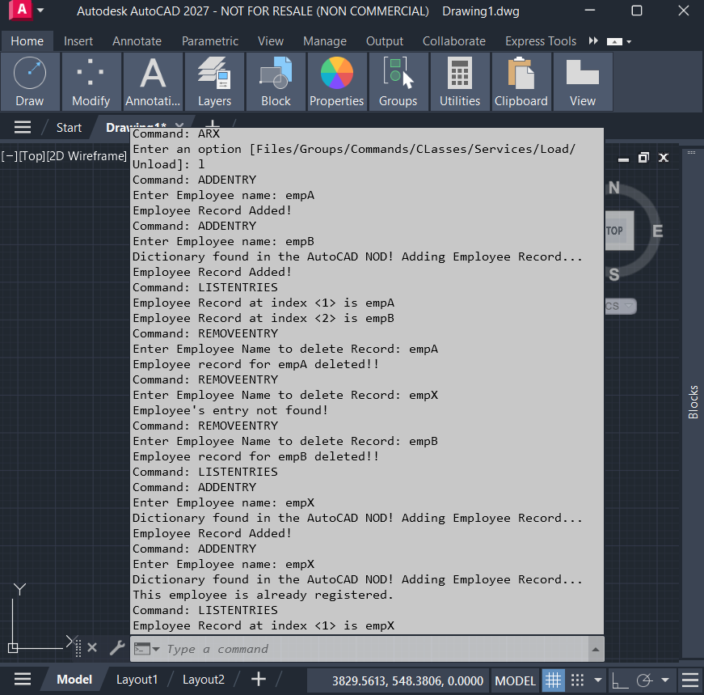
images/l5-01-listentries.pngYou can now persist your own data inside a drawing — the basis for plug-ins that remember settings, records, and relationships. Stuck on any command? Compare with Solutions\Lesson5_Solved.zip.
Custom Objects — DB/UI Separation
Lesson 5 stored plain names as AcDbXrecord entries in the Named Objects Dictionary. This
lesson goes further: you define your own custom object class — AdkEmployeeDetails
— derived from AcDbObject, and attach it to an EMPLOYEE block reference through
that block's extension dictionary.
You'll also meet DB/UI separation: two modules working together —
- ObjectDBX (
.dbx) — the database half. Defines and registers the custom object class. No AutoCAD command-line UI required. - ObjectARX (
.arx) — the user-interface half. Provides the commands that create, read, and eraseAdkEmployeeDetailsobjects on block references.
The object relationship you are building on each EMPLOYEE block reference:
Employee (AcDbBlockReference)
|_ Extension Dictionary (AcDbDictionary)
|_ "ADSK_EMPLOYEE_DICTIONARY" (AcDbDictionary)
|_ "DETAILS" (AdkEmployeeDetails)You'll implement three commands in the ARX module:
ADDDETAIL
- Prompt the user to select an EMPLOYEE block reference.
- Prompt for employee ID, cube number, first name, and last name.
- Ensure the block has an extension dictionary and an
ADSK_EMPLOYEE_DICTIONARYsub-dictionary. - If no
AdkEmployeeDetailsexists under the key"DETAILS", create one, fill it in, and store it in the dictionary.
LISTDETAILS
- Select an EMPLOYEE block reference.
- Walk the extension dictionary →
ADSK_EMPLOYEE_DICTIONARY→"DETAILS". - If an
AdkEmployeeDetailsobject exists, read its fields and print them.
REMOVEDETAIL
- Select an EMPLOYEE block reference.
- Retrieve and erase the
AdkEmployeeDetailsunder"DETAILS". - If the dictionaries are now empty, erase them too.
Same golden rule as Lessons 4 and 5. Every object you open must be closed. Custom objects opened for read or write must be closed on every code path.
Starting point — ARX template. Begin with the Lesson 6 ARX
template: an ObjectARX project named Lesson6 that already contains the code same as Lesson4(with CREATE and SETLAYER commands).
From the Solutions, unzip Lesson6_template.zip and open its ARX project. You will add the EmployeeDetails
DBX module yourself in the next steps — using the acad-arx-wizard skill instead of the
Visual Studio ObjectARX wizard(used till AutoCAD 2026).
Learn-by-doing. Steps 3–6 give you the algorithms and key code
snippets, not the finished implementation. Try writing the code yourself; a complete solution is in
Solutions\Lesson6_Solved.
Folder layout when you're done
Lesson6\ ← your working folder
Lesson6\ ← ARX template (UI commands)
EmployeeDetails\ ← DBX module (custom object) — created by skillStep 1 — Create the DBX project (with the skill)
The classic Visual Studio flow — File → New → Project → ObjectARX/DBX — is broken in
Visual Studio 2026. Use the same acad-arx-wizard skill from Lesson 2 instead.
In Claude Code:
/acad-arx-wizard
Create an ObjectDBX project named EmployeeDetails inside
C:\Users\<you>\source\repos\Lesson6. AppType = dbx, MFC = none.Behind the scenes the skill runs something like:
New-ArxApp.ps1 -ProjectName EmployeeDetails `
-OutputPath "C:\Users\<you>\source\repos\Lesson6" `
-AppType dbx `
-MfcMode noneThat generates a self-contained DBX project folder with acrxEntryPoint.cpp,
EmployeeDetails.vcxproj, property sheets, and the usual ObjectARX boilerplate — the same files
the old wizard would have produced.
Add the DBX project to your existing solution
The skill creates the project on disk; it does not attach it to your open solution automatically.
In Visual Studio, with the Lesson6 ARX template already open:
- In Solution Explorer, right-click the Solution node → Add → Existing Project…
- Select
EmployeeDetails\EmployeeDetails.vcxproj.
Your solution should now contain two projects: Lesson6 (ARX) and
EmployeeDetails (DBX).
Output names. With the default RDS prefix Adk, the built module is
AdkEmployeeDetails.dbx and the import library is AdkEmployeeDetails.lib. The
class is still named AdkEmployeeDetails — class name and DLL prefix are independent.

images/l6-01-dbxproj.pngStep 2 — Scaffold the custom object class (with the skill)
Instead of Add → New Item → ObjectDBX Custom Object Class Wizard, ask the skill to generate the class pair:
/acad-arx-wizard
In the EmployeeDetails project, add a custom object class named AdkEmployeeDetails
derived from AcDbObject, with Dwg and Dxf filing protocols.Equivalent PowerShell:
New-ArxCustomObject.ps1 -ClassName AdkEmployeeDetails `
-BaseClass AcDbObject `
-Protocols 1 `
-ProjectName EmployeeDetails `
-OutputPath "C:\Users\<you>\source\repos\Lesson6\EmployeeDetails"-Protocols 1 stubs out the AcDbObject filing methods only —
dwgInFields, dwgOutFields, dxfInFields, and
dxfOutFields — matching what the old wizard offered on the Protocols tab.
The skill writes AdkEmployeeDetails.h and AdkEmployeeDetails.cpp and adds them
to EmployeeDetails.vcxproj automatically.
Register the DBX service name
Open AdkEmployeeDetails.h and add a constant the ARX module will use to locate this DBX
at runtime. Place it near the top of the header (after the includes):
#define ADKEMPLOYEEDETAILS_DBXSERVICE ACRX_T("ADKEMPLOYEEDETAILS_DBXSERVICE")The scaffold also emits the class-registration macro at the bottom of the header:
#ifdef EMPLOYEEDETAILS_MODULE
ACDB_REGISTER_OBJECT_ENTRY_AUTO(AdkEmployeeDetails)
#endifThat macro registers and unregisters AdkEmployeeDetails with the ObjectARX runtime class
tree when the DBX module loads and unloads — you do not need to call rxInit() by hand.
Step 3 — Members & accessors
Open AdkEmployeeDetails.h. The skill scaffold already declared the dwg/dxf filing stubs.
Now add the data members and accessor functions.
Member variables
| Variable | Type | DXF code |
|---|---|---|
m_lastName | TCHAR* | 300 |
m_firstName | TCHAR* | 301 |
m_cube | Adesk::Int32 | 90 |
m_ID | Adesk::Int32 | 91 |
- In
AdkEmployeeDetails.h, add to the class declaration:
private:
Adesk::Int32 m_ID;
Adesk::Int32 m_cube;
TCHAR* m_firstName;
TCHAR* m_lastName;- In
AdkEmployeeDetails.cpp, implement the constructor:
AdkEmployeeDetails::AdkEmployeeDetails() : AcDbObject()
{
// Initialize.
m_cube = 0;
m_ID = 0;
m_firstName = NULL;
m_lastName = NULL;
}- Add public accessor/mutator declarations in the header:
public:
Acad::ErrorStatus setID (const Adesk::Int32 ID);
Acad::ErrorStatus iD (Adesk::Int32& ID);
Acad::ErrorStatus setCube (const Adesk::Int32 cube);
Acad::ErrorStatus cube (Adesk::Int32& cube);
Acad::ErrorStatus setFirstName(const TCHAR* firstName);
Acad::ErrorStatus firstName (TCHAR*& firstName);
Acad::ErrorStatus setLastName (const TCHAR* lastName);
Acad::ErrorStatus lastName (TCHAR*& lastName);- Implement the accessors in
AdkEmployeeDetails.cpp. Here is the pattern forfirstName()/setFirstName()— implement the remaining six functions the same way:
Acad::ErrorStatus AdkEmployeeDetails::firstName(TCHAR*& firstName)
{
assertReadEnabled();
firstName = _tcsdup(m_firstName);
return Acad::eOk;
}
Acad::ErrorStatus AdkEmployeeDetails::setFirstName(const TCHAR* firstName)
{
assertWriteEnabled();
if (m_firstName)
free(m_firstName);
m_firstName = _tcsdup(firstName);
return Acad::eOk;
}Read/write guards. Call assertReadEnabled() before reading any member
data, and assertWriteEnabled() before modifying it. These check that the object is open at the
correct access level; if not, they throw so the user can still save the drawing.
You must also implement the dwg/dxf filing methods so your data persists in the DWG. Fill in
dwgInFields, dwgOutFields, dxfInFields, and
dxfOutFields to read and write the four members using the DXF codes in the table above.
Refer to the ObjectARX Developer's Guide for filer API details.
Build warning treated as an error? If your build fails on a warning inside
Acad::ErrorStatus AdkEmployeeDetails::dxfInFields(AcDbDxfFiler* pFiler) — typically an
unhandled-case warning on the DXF code switch — compare your switch against
Solutions\Lesson6_Solved to see how it manages the default case.
Step 4 — Register & build the DBX module
Open EmployeeDetails\acrxEntryPoint.cpp and register your DBX as a named service when the
module loads. Include the custom-object header at the top:
#include "AdkEmployeeDetails.h"In On_kInitAppMsg() and On_kUnloadAppMsg() of the
CEmployeeDetailsApp class:
virtual AcRx::AppRetCode On_kInitAppMsg (void* pkt)
{
AcRx::AppRetCode retCode = AcRxDbxApp::On_kInitAppMsg(pkt);
// Register so the ARX module can find us.
acrxRegisterService(ADKEMPLOYEEDETAILS_DBXSERVICE);
return retCode;
}
virtual AcRx::AppRetCode On_kUnloadAppMsg (void* pkt)
{
AcRx::AppRetCode retCode = AcRxDbxApp::On_kUnloadAppMsg(pkt);
delete acrxServiceDictionary->remove(ADKEMPLOYEEDETAILS_DBXSERVICE);
return retCode;
}Build the DBX project first. Right-click EmployeeDetails in Solution Explorer
→ Build. Confirm the output: EmployeeDetails\x64\Debug\AdkEmployeeDetails.dbx
(and AdkEmployeeDetails.lib in the same folder).
Step 5 — The ARX commands
Switch to the Lesson6 ARX project from your template. Add a function per command in
acrxEntryPoint.cpp and register each with ACED_ARXCOMMAND_ENTRY_AUTO (the Lesson 2
pattern).
ADDDETAIL — algorithm
- Let the user select a block reference (
acedEntSel()).- Convert the
ads_nameto anAcDbObjectId(acdbGetObjectId()). - Open the object (
acdbOpenAcDbObject()oracdbOpenObject()). - Verify it is a block reference (
isKindOf(AcDbBlockReference::desc())). Return if not.
- Convert the
- Prompt for employee ID, cube, first name, and last name (
acedGetInt(),acedGetString()). - Get the block's extension dictionary (
AcDbObject::extensionDictionary()). Create one if missing (createExtensionDictionary()). - Open the extension dictionary for write. If it was previously erased, unerase it
(
erase(Adesk::kFalse)). - Retrieve or create
"ADSK_EMPLOYEE_DICTIONARY"inside the extension dictionary (AcDbDictionary::getAt()/setAt()). - Check whether an
AdkEmployeeDetailsalready exists under the key"DETAILS".- If not, create a new
AdkEmployeeDetails, set its data via the accessors, andsetAt("DETAILS", ...)intoADSK_EMPLOYEE_DICTIONARY.
- If not, create a new
- Close every object you opened.
LISTDETAILS — algorithm
- Select a block reference (same selection steps as above).
- Retrieve the extension dictionary. If none, return.
- Retrieve
"ADSK_EMPLOYEE_DICTIONARY". If none, return. - Retrieve the
AdkEmployeeDetailsunder"DETAILS". - Read its fields through the accessor functions and print them with
acutPrintf(). - Close everything you opened.
REMOVEDETAIL — algorithm
- Select a block reference (same selection steps as above).
- Walk extension dictionary →
ADSK_EMPLOYEE_DICTIONARY→"DETAILS". Return if any step is missing. - Open the
AdkEmployeeDetailsfor write anderase()it. - If a dictionary now has zero entries (
AcDbDictionary::numEntries()), erase that dictionary too (inner first, then extension dictionary). - Close everything you opened.
Register the three commands at the bottom of acrxEntryPoint.cpp:
ACED_ARXCOMMAND_ENTRY_AUTO(CLesson6App, AdkLesson6, _ADDDETAIL, ADDDETAIL, ACRX_CMD_TRANSPARENT, NULL)
ACED_ARXCOMMAND_ENTRY_AUTO(CLesson6App, AdkLesson6, _LISTDETAILS, LISTDETAILS, ACRX_CMD_TRANSPARENT, NULL)
ACED_ARXCOMMAND_ENTRY_AUTO(CLesson6App, AdkLesson6, _REMOVEDETAIL, REMOVEDETAIL, ACRX_CMD_TRANSPARENT, NULL)Naming reminder. Function name = group + global command. Group AdkLesson6
+ global command _ADDDETAIL → AdkLesson6_ADDDETAIL(), and the same pattern for
_LISTDETAILS and _REMOVEDETAIL.
Step 6 — Load the DBX from the ARX module
After building the DBX, wire the ARX project so it can use the custom object at runtime.
- In
Lesson6\StdAfx.h, include the custom-object header from the sibling project:#include "..\EmployeeDetails\AdkEmployeeDetails.h" - In the ARX project's linker settings, add
AdkEmployeeDetails.libto Linker → Input → Additional Dependencies, and add the folder that contains the.lib(typicallyEmployeeDetails\x64\Debug) to Linker → General → Additional Library Directories. - In
Lesson6\acrxEntryPoint.cpp, insideOn_kInitAppMsg()ofCLesson6App, load the DBX module if its service is not already registered:
AcRxObject* pSvc;
if ( !(pSvc = acrxServiceDictionary->at(ADKEMPLOYEEDETAILS_DBXSERVICE)) )
{
if ( !acrxDynamicLinker->loadModule(ACRX_T("AdkEmployeeDetails.dbx"), 0) )
{
acutPrintf(ACRX_T("\nUnable to load AdkEmployeeDetails.dbx. Unloading...\n"));
return AcRx::kRetError;
}
}DBX file location. In production, ObjectDBX modules often live under
C:\Program Files\Common Files\Autodesk Shared\. During development, AutoCAD finds the
.dbx if it sits next to your .arx or is on the support path.
Step 7 — Build & test
Build order: DBX first, then ARX.
- Build EmployeeDetails (x64 Debug) →
AdkEmployeeDetails.dbx. - Build Lesson6 (x64 Debug) →
AdkLesson6.arx. - In AutoCAD 2027,
APPLOADAdkEmployeeDetails.dbx first, then AdkLesson6.arx (the ARX also attempts to load the DBX automatically on startup). - Create EMPLOYEE block references — use Lesson 4's
CREATEcommand and AutoCAD'sINSERT, or any drawing that already hasEMPLOYEEblocks. - Run
ADDDETAILon a block, enter employee data, then tryLISTDETAILSandREMOVEDETAIL. - Save, close, and reopen the drawing — run
LISTDETAILSagain to confirm the custom object data persisted in the drawing.
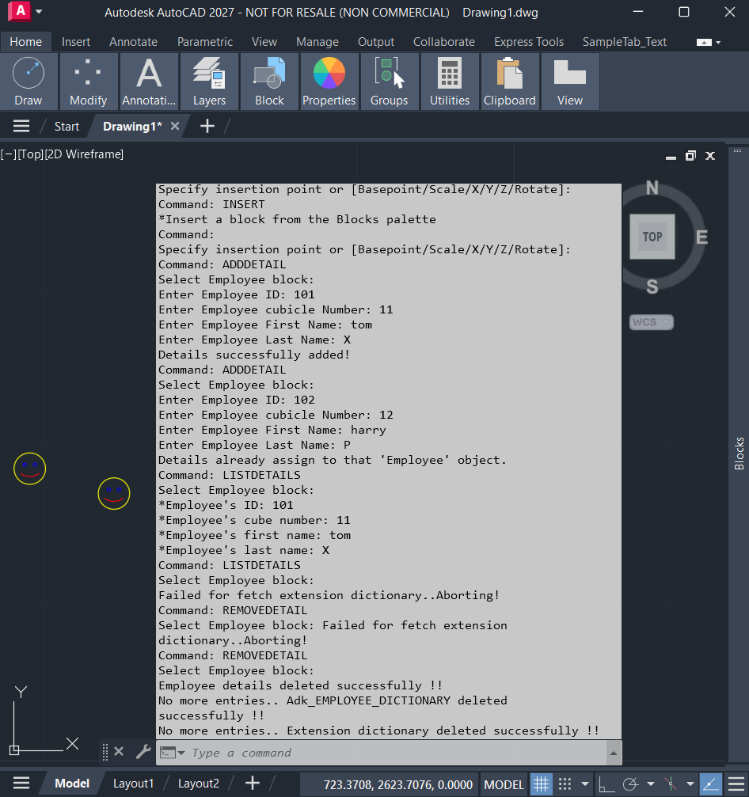
images/l6-02-listdetails.pngYou now have a typed custom object stored on entities in the drawing — the pattern behind most real-world ObjectARX data extensions. Stuck on any step? Compare with Solutions\Lesson6_Solved.zip.
Custom Entities — Data Inside the Entity Itself
Lesson 6 stored employee data outside the EMPLOYEE block reference, in an extension
dictionary. This lesson stores it inside a custom entity class instead —
AdkEmployee, derived from AcDbEllipse. You get all the built-in behavior of an
ellipse — it draws, grips, snaps, and plots like one — plus your own employee fields and your own draw
logic layered on top.
Same DB/UI separation as Lesson 6, one command instead of three:
- ObjectDBX (
.dbx) — the database half. Defines and registers the custom entity class. No AutoCAD command-line UI required. - ObjectARX (
.arx) — the user-interface half. Provides the command that creates anAdkEmployeeentity in the drawing.
You'll implement one command in the ARX module:
CREATEEMPLOYEE
- Prompt the user for
- employee ID
- cube number
- first name
- last name
- a location point
- Create a new
AdkEmployeeentity, fill in the data obtained from the user, and place it in Model Space at the picked point.
Starting point — scaffold the ARX project (with the skill). Begin by
scaffolding a fresh ObjectARX project named Lesson7 with the acad-arx-wizard
skill — the same flow as Lessons 2 and 4. It has no command stubs yet; you'll add
CREATEEMPLOYEE yourself in Step 6. You'll add the Employee DBX module as a
sibling project in the next step.
/acad-arx-wizard
Create an ObjectARX project named Lesson7 inside
C:\Users\<you>\source\repos\Lesson7. AppType = arx, MFC = none.Equivalent PowerShell:
New-ArxApp.ps1 -ProjectName Lesson7 `
-OutputPath "C:\Users\<you>\source\repos\Lesson7" `
-AppType arx `
-MfcMode noneLearn-by-doing. Steps 3, 4, and 6 give you the algorithms and key
code snippets, not the finished implementation. Try writing the code yourself; a complete solution is in
Solutions\Lesson7_Solved.
Folder layout when you're done
Lesson7\ ← your working folder
Lesson7\ ← ARX project (UI command) — created by skill
Employee\ ← DBX module (custom entity) — created by skillStep 1 — Create the DBX project (with the skill)
Same flow as Lesson 6 — add a sibling ObjectDBX project to the open solution, this time named
Employee:
/acad-arx-wizard
Create an ObjectDBX project named Employee inside
C:\Users\<you>\source\repos\Lesson7. AppType = dbx, MFC = none.Equivalent PowerShell:
New-ArxApp.ps1 -ProjectName Employee `
-OutputPath "C:\Users\<you>\source\repos\Lesson7" `
-AppType dbx `
-MfcMode noneAdd the DBX project to your existing solution
In Visual Studio, with the Lesson7 ARX project already open:
- In Solution Explorer, right-click the Solution node → Add → Existing Project…
- Select
Employee\Employee.vcxproj.
Your solution should now contain two projects: Lesson7 (ARX) and Employee
(DBX).
Output names. With the default RDS prefix Adk, the built module is
AdkEmployee.dbx and the import library is AdkEmployee.lib. The class
is still named AdkEmployee.

images/l7-01-dbxproj.pngStep 2 — Scaffold the custom entity class (with the skill)
Ask the skill to generate the entity class pair, this time derived from AcDbEllipse
instead of AcDbObject:
/acad-arx-wizard
In the Employee project, add a custom entity class named AdkEmployee
derived from AcDbEllipse, with Dwg and Dxf filing protocols and entity
graphics support (worldDraw).Equivalent PowerShell:
New-ArxCustomObject.ps1 -ClassName AdkEmployee `
-BaseClass AcDbEllipse `
-IncludeHeader dbell.h `
-Protocols 2 `
-ProjectName Employee `
-OutputPath "C:\Users\<you>\source\repos\Lesson7\Employee"Why -IncludeHeader dbell.h. The skill only infers a base-class
header automatically for AcDbCurve and AcDbEntity. For any other base class —
including AcDbEllipse — pass the header explicitly so the generated
AdkEmployee.h compiles.
-Protocols 2 stubs out the AcDbObject filing methods
(dwgInFields, dwgOutFields, dxfInFields, dxfOutFields)
and the AcDbEntity graphics methods (subWorldDraw,
subSetAttributes) — matching what the old wizard generated for any entity-derived custom
class once the Dwg and Dxf Protocols checkboxes were ticked.
The skill writes AdkEmployee.h and AdkEmployee.cpp and adds them to
Employee.vcxproj automatically.
Register the DBX service name
Open AdkEmployee.h and add a constant the ARX module will use to locate this DBX at
runtime. Place it near the top of the header (after the includes):
#define ADKEMPLOYEE_DBXSERVICE ACRX_T("ADKEMPLOYEE_DBXSERVICE")The scaffold also emits the class-registration macro at the bottom of the header:
#ifdef EMPLOYEE_MODULE
ACDB_REGISTER_OBJECT_ENTRY_AUTO(AdkEmployee)
#endifThat macro registers and unregisters AdkEmployee with the ObjectARX runtime class tree
when the DBX module loads and unloads.
Step 3 — Members & accessors
Open AdkEmployee.h. Same four data members as Lesson 6's AdkEmployeeDetails
— this time they travel with the entity itself instead of living in a dictionary.
Member variables
| Variable | Type | DXF code |
|---|---|---|
m_lastName | TCHAR* | 300 |
m_firstName | TCHAR* | 301 |
m_cube | Adesk::Int32 | 90 |
m_ID | Adesk::Int32 | 91 |
- In
AdkEmployee.h, add to the class declaration:
private:
Adesk::Int32 m_ID;
Adesk::Int32 m_cube;
TCHAR* m_firstName;
TCHAR* m_lastName;- Add public accessor/mutator declarations in the header — identical pattern to Lesson 6:
public:
Acad::ErrorStatus setID (const Adesk::Int32 ID);
Acad::ErrorStatus iD (Adesk::Int32& ID);
Acad::ErrorStatus setCube (const Adesk::Int32 cube);
Acad::ErrorStatus cube (Adesk::Int32& cube);
Acad::ErrorStatus setFirstName(const TCHAR* firstName);
Acad::ErrorStatus firstName (TCHAR*& firstName);
Acad::ErrorStatus setLastName (const TCHAR* lastName);
Acad::ErrorStatus lastName (TCHAR*& lastName);- Implement the accessors in
AdkEmployee.cpp. SamefirstName()/setFirstName()pattern as Lesson 6 — implement the remaining six functions the same way:
Acad::ErrorStatus AdkEmployee::firstName(TCHAR*& firstName)
{
assertReadEnabled();
firstName = _tcsdup(m_firstName);
return Acad::eOk;
}
Acad::ErrorStatus AdkEmployee::setFirstName(const TCHAR* firstName)
{
assertWriteEnabled();
if (m_firstName)
free(m_firstName);
m_firstName = _tcsdup(firstName);
return Acad::eOk;
}You must also implement dwgInFields, dwgOutFields, dxfInFields,
and dxfOutFields to read and write the four members using the DXF codes above — call the
base class's filing method first in each, exactly as in Lesson 6. Refer to the ObjectARX Developer's Guide
for filer API details.
Step 4 — worldDraw() & the constructor
This is the part that's new to custom entities: your class must draw itself. The skill
scaffold already stubbed subWorldDraw() calling straight through to the base class — you
extend it to also draw the employee data as text.
- Implement
subWorldDraw(). Call the base class'ssubWorldDraw()(AcDbEllipse::subWorldDraw()) first — the skill's scaffold already wires that part up for you, so this is just adding to it. Then draw theAdkEmployeeentity's own data as text, usingAcGiWorldDraw::geometry()/AcGiGeometry::text().subWorldDraw()is passed anAcGiWorldDraw*— callmode->geometry().text(...)on it. For the text's position, normal, direction, and height, use the properties already sitting on the entity itself: sinceAdkEmployeeis derived fromAcDbEllipse,center(),normal(),majorAxis(), andminorAxis()are all there for the taking, no extra lookups needed:
Adesk::Boolean AdkEmployee::subWorldDraw(AcGiWorldDraw* mode)
{
assertReadEnabled();
// Draw the ellipse first (base class behavior).
AcDbEllipse::subWorldDraw(mode);
// Line 1: ID and cube number, centered on the ellipse.
TCHAR buffer[255];
_stprintf(buffer, _T("%d (cubicle: %d)"), m_ID, m_cube);
mode->geometry().text(center(), normal(), majorAxis(),
minorAxis().length() / 2, 1.0, 0.0, buffer);
// Line 2: first and last name, offset half a minor axis below line 1.
_stprintf(buffer, _T("%s %s"), m_firstName, m_lastName);
mode->geometry().text(center() - minorAxis() / 2, normal(), majorAxis(),
minorAxis().length() / 2, 1.0, 0.0, buffer);
return Adesk::kTrue;
}Where the arguments come from. center(), normal(),
majorAxis(), and minorAxis() are all inherited from AcDbEllipse —
your entity already knows its own position, orientation, and size.
AcGiGeometry::text() takes position, normal, direction, height, width, oblique,
text — minorAxis().length() / 2 for height keys the label size to the ellipse itself.
Refer to the ObjectARX Developer's Guide for the full signature and the remaining draw options.
- Change the constructor to initialize the
AcDbEllipsebase class instead ofAcDbObject:
AdkEmployee::AdkEmployee()
: AcDbEllipse(AcGePoint3d(), AcGeVector3d(0, 0, 1), AcGeVector3d(1, 0, 0), 1)
{
// Initialize string pointers.
m_firstName = m_lastName = NULL;
}The four arguments are the ellipse's center, normal, major axis, and radius ratio.
CREATEEMPLOYEE will move and size the entity after construction, in Step 6.
Step 5 — Register & build the DBX module
Open Employee\acrxEntryPoint.cpp and register the DBX as a named service — identical
pattern to Lesson 6. Include the custom-entity header at the top:
#include "AdkEmployee.h"In On_kInitAppMsg() and On_kUnloadAppMsg() of the
CEmployeeApp class:
virtual AcRx::AppRetCode On_kInitAppMsg (void* pkt)
{
AcRx::AppRetCode retCode = AcRxDbxApp::On_kInitAppMsg(pkt);
// Register so the ARX module can find us.
acrxRegisterService(ADKEMPLOYEE_DBXSERVICE);
return retCode;
}
virtual AcRx::AppRetCode On_kUnloadAppMsg (void* pkt)
{
AcRx::AppRetCode retCode = AcRxDbxApp::On_kUnloadAppMsg(pkt);
delete acrxServiceDictionary->remove(ADKEMPLOYEE_DBXSERVICE);
return retCode;
}Build the DBX project first. Right-click Employee in Solution Explorer →
Build. Confirm the output: Employee\x64\Debug\AdkEmployee.dbx (and
AdkEmployee.lib in the same folder).
Step 6 — The CREATEEMPLOYEE command
Switch to the Lesson7 ARX project. Add a function in acrxEntryPoint.cpp and
register it with ACED_ARXCOMMAND_ENTRY_AUTO (the Lesson 2 pattern).
CREATEEMPLOYEE — algorithm
- Prompt for employee ID, cube, first name, and last name (
acedGetInt(),acedGetString()), and a location point (acedGetPoint()). - Convert the returned
ads_pointto anAcGePoint3dwith the global functionasDblArray(). - Create a new
AdkEmployeeinstance. - Set its data via the accessors from Step 3, and position it at the picked point.
- Open the Model Space
AcDbBlockTableRecordfor write and append the entity (AcDbBlockTableRecord::appendAcDbEntity()). - Close every object you opened.
Same golden rule as Lessons 4–6. Every object you open must be
closed — including the newly created AdkEmployee once it has been
appended.
Naming reminder. Function name = group + command. For
CREATEEMPLOYEE in group AdkMyGroup, the function is
AdkMyGroupCREATEEMPLOYEE().
Step 7 — Load the DBX from the ARX module
Same wiring as Lesson 6, with the new names.
- In
Lesson7\StdAfx.h, include the custom-entity header from the sibling project:#include "..\Employee\AdkEmployee.h" - In the ARX project's linker settings, add
AdkEmployee.libto Linker → Input → Additional Dependencies, and add the folder that contains the.lib(typicallyEmployee\x64\Debug) to Linker → General → Additional Library Directories. - In
Lesson7\acrxEntryPoint.cpp, insideOn_kInitAppMsg()ofCLesson7App, load the DBX module if its service is not already registered:
AcRxObject* pSvc;
if ( !(pSvc = acrxServiceDictionary->at(ADKEMPLOYEE_DBXSERVICE)) )
{
if ( !acrxDynamicLinker->loadModule(ACRX_T("AdkEmployee.dbx"), 0) )
{
acutPrintf(ACRX_T("\nUnable to load AdkEmployee.dbx. Unloading...\n"));
return AcRx::kRetError;
}
}DBX file location. In production, ObjectDBX modules often live under
C:\Program Files\Common Files\Autodesk Shared\. During development, AutoCAD finds the
.dbx if it sits next to your .arx or is on the support path.
Step 8 — Build & test
Build order: DBX first, then ARX.
- Build Employee (x64 Debug) →
AdkEmployee.dbx. - Build Lesson7 (x64 Debug) →
AdkLesson7.arx. - In AutoCAD 2027,
APPLOADAdkEmployee.dbx first, then AdkLesson7.arx (the ARX also attempts to load the DBX automatically on startup). - Run
CREATEEMPLOYEE, enter employee data, and pick a point in Model Space. - Save the drawing.
See what a custom entity needs its DBX for. With the drawing still open,
unload both AdkLesson7.arx and AdkEmployee.dbx — run APPLOAD,
select each in the list, and click Unload.
Your EMPLOYEE entity turns into a generic Proxy entity — AutoCAD can no longer draw or
edit it as an AdkEmployee without its class definition. APPLOAD both modules
again and the entity becomes a real AdkEmployee once more. This is the key difference from
Lesson 6: data hidden in an extension dictionary doesn't visibly degrade when its DBX is missing, but a
custom entity does — because the entity is the drawn geometry.
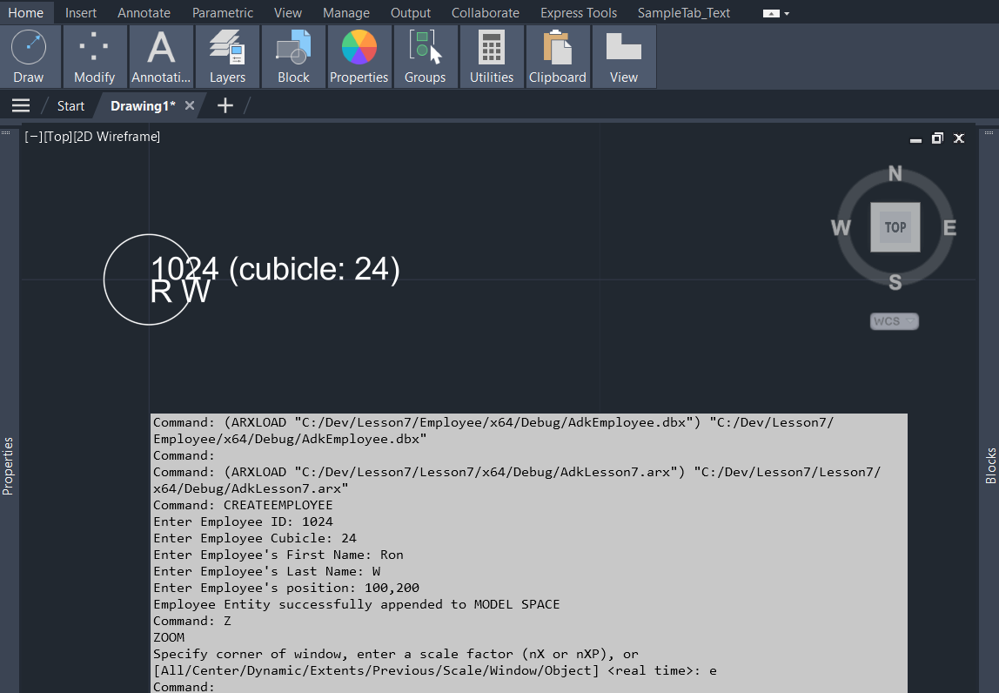
images/l7-01-createemployee.pngYou now have a custom entity that carries its own data and its own draw logic — the pattern behind most real-world custom AutoCAD objects. Stuck on any step? Compare with Solutions\Lesson7_Solved.zip.
Transient Reactors — Reacting to What the User Does
Every lesson so far added a command the user types. This lesson adds no commands at all — instead it watches AutoCAD's editor and database and reacts when something happens. Reactors come in several flavors:
- The database reactor,
AcDbDatabaseReactor— monitors events within the scope of the database, such as adding and removing entities. - The editor reactor,
AcEditorReactor— monitors events that happen while the user is editing a drawing, such as commands starting and ending, or closing an active session. - The object reactor,
AcDbObjectReactor— monitors events specific to a particular entity, such as being opened for modification and notify an application when the entity is modified. . - The document manager reactor,
AcApDocManagerReactor— since release 2000, AutoCAD is a multiple document environment. This reactor monitors MDI document-window related events, such as opening, closing, and switching documents in the AutoCAD session. SDI mode events are supported as well.
You already have #4. The acad-arx-wizard skill's ARX template
generates DocData.h/.cpp with a global AcApDataManager<CDocData>
DocVars — see Step 1. It transparently creates and switches one CDocData instance per
open document, which is exactly what a document manager reactor would otherwise be needed for. This lesson
only needs you to build the other three reactors.
Objective
This application registers no new commands. It depends on EMPLOYEE block references — the
kind you created with Lesson 4's CREATE command. It watches for MOVE,
ROTATE, STRETCH, SCALE, or grip-stretch starting on an EMPLOYEE
block reference, and if the reference's position (its insertion point) ends up different once the
command finishes, resets it back to where it was.
Only position is tracked and restored — not scale, rotation angle, or size. MOVE always
changes position, so it's always reverted. SCALE or an in-place ROTATE (about
the block's own insertion point) don't change position at all, so there's nothing for the reactor to catch
— the entity visibly stays scaled or rotated.
The strategy, in order:
- An editor reactor (
AdkEdEmployeeReactor) watches for one of the five monitored commands starting and ending. - An object reactor (
AdkEmployeeReactor), attached to every EMPLOYEE block reference, notices when one is opened for modify before the transform happens, and records its object ID and current position. - When the command ends, the editor reactor compares each recorded position against the block reference's new position and, if it moved, resets it.
- A database reactor (
AdkDbEmployeeReactor) watches for newly created EMPLOYEE block references and attaches the object reactor to them automatically.
Because a user can apply an edit command to a selection set containing several EMPLOYEE references (and
other entities) at once, the tracking data is two parallel arrays: an AcDbObjectIdArray
(m_changedObjects) and an AcGePoint3dArray (m_employeePositions) —
one entry per block reference currently being watched.
These two arrays are also per-document — each open document needs its own copies, swapped in whenever the active document becomes current. Managing that swap on a document-by-document basis is exactly the job a document manager reactor (reactor #4 above) exists to do; see the tip above for where that's already covered.
Starting point — ARX + DBX template. Begin with the Lesson 8
template: from the Solutions, unzip Lesson8_template.zip. It contains two projects,
already wired together the same way as Lessons 6–7:
- An ObjectARX project named
Lesson8that already carries over Lesson 4'sCREATEcommand, so you have a way to create the EMPLOYEE block references these reactors watch without re-typing it. It does not carry over Lesson 4'sSETLAYERor any of Lessons 6–7's commands — those aren't needed here. - The Employee DBX module from Lesson 7 — the
AdkEmployeecustom entity — already built, linked, and loaded automatically byLesson8'sOn_kInitAppMsg(). This lesson's reactors watch the plain EMPLOYEEAcDbBlockReferencecreated byCREATE, not anAdkEmployeeinstance, so you won't touch this module directly — it's carried forward simply because it's already part of the same project chain.
Learn-by-doing. Steps 2, 3, 4, and 5 give you the algorithms, not the
finished implementation. Try writing the code yourself; a complete solution is in
Solutions\Lesson8_Solved.
Folder layout when you're done
Lesson8\ ← your working folder
Lesson8\ ← ARX project — reactors live here
Employee\ ← DBX module carried over from Lesson 7 (not modified in this lesson)Step 1 — Open the template & prepare document data
Unzip Lesson8_template.zip from the Solutions and open Lesson8.sln in Visual
Studio 2026. You'll find the two projects described above already there: Lesson8 (ARX, with
CREATE carried over from Lesson 4) and Employee (DBX, carried over unchanged
from Lesson 7).
Lesson8 was originally scaffolded with the acad-arx-wizard skill, same as
every other lesson's ARX project, so it already has DocData.h and DocData.cpp —
a CDocData class plus the global AcApDataManager<CDocData> DocVars
declared in StdAfx.h. This is where document-specific data lives;
DocVars.docData() retrieves the instance for the current document.
You'll add four tracking members to the CDocData class to hold this lesson's per-document
state.
Add the tracking member variables
| Variable | Type |
|---|---|
m_editCommand | bool |
m_doRepositioning | bool |
m_changedObjects | AcDbObjectIdArray |
m_employeePositions | AcGePoint3dArray |
m_editCommand— true while one of the five monitored commands is active.m_doRepositioning— true while we are the ones repositioning a block reference, so the object reactor knows to ignore the resulting modify notification.m_changedObjects— object IDs of the EMPLOYEE references touched by the current command.m_employeePositions— their positions before the command started.
Add the members to the CDocData class declaration in DocData.h, and
initialize the two booleans in the constructor in DocData.cpp:
CDocData::CDocData()
{
m_editCommand = false;
m_doRepositioning = false;
}Step 2 — The editor reactor: AdkEdEmployeeReactor
Scaffold a reactor class derived from AcEditorReactor with the skill:
/acad-arx-wizard
In the Lesson8 project, add a transient reactor class named
AdkEdEmployeeReactor derived from AcEditorReactor.Equivalent PowerShell:
New-ArxReactors.ps1 -ClassName AdkEdEmployeeReactor `
-ReactorType AcEditorReactor `
-ProjectName Lesson8 `
-OutputPath "C:\Users\<you>\source\repos\Lesson8\Lesson8"The generated constructor takes a bool autoInitAndRelease (default true):
when true, the class attaches itself to acedEditor in its constructor and detaches in its
destructor, so you never call addReactor()/removeReactor() yourself for this one.
Open AdkEdEmployeeReactor.h in the class view and override two virtual functions from
AcEditorReactor: commandWillStart() and commandEnded().
commandWillStart() — algorithm
- Check whether the command name passed in matches one of
"MOVE","ROTATE","STRETCH","SCALE", or"GRIP_STRETCH"(strcmp()or similar). - If it does, set
m_editCommand = trueandm_doRepositioning = false— viaDocVars.docData(). - Reset
m_changedObjectsandm_employeePositionsto zero length (AcDbObjectIdArray::setLogicalLength()).
commandEnded() — algorithm
- If the command that just ended isn't one of the monitored commands, set
m_editCommand = falseand return. - Set
m_editCommand = falseandm_doRepositioning = true— we're about to reposition, and the object reactor should ignore what follows. - For every entry in
m_changedObjects(AcDbObjectIdArray::length()):- Open the entity (
acdbOpenObject()). - Compare its current position (
AcDbBlockReference::position()) against the stored original (m_employeePositions.at()). If different, reset it (AcDbBlockReference::setPosition()).
- Open the entity (
Create a global pointer in acrxEntryPoint.cpp:
AdkEdEmployeeReactor *pEdEmployeeReactor = NULL;Create the instance in On_kInitAppMsg() of CLesson8App — the true
argument lets the class handle its own attach/detach:
pEdEmployeeReactor = new AdkEdEmployeeReactor(true);Delete it on unload. In On_kUnloadAppMsg():
delete pEdEmployeeReactor; — an editor reactor is added when the application loads and
must be removed when it unloads. Forgetting this can crash AutoCAD.
Step 3 — The object reactor: AdkEmployeeReactor
/acad-arx-wizard
In the Lesson8 project, add a transient reactor class named
AdkEmployeeReactor derived from AcDbObjectReactor.New-ArxReactors.ps1 -ClassName AdkEmployeeReactor `
-ReactorType AcDbObjectReactor `
-ProjectName Lesson8 `
-OutputPath "C:\Users\<you>\source\repos\Lesson8\Lesson8"Unlike the editor reactor, this one has no auto-attach behavior — you'll attach it to specific objects
yourself in Step 4. Override openedForModify() from AcDbObjectReactor.
openedForModify() — algorithm
- If
m_doRepositioningistrue(viaDocVars.docData()), return immediately — this notification is a side effect of our own reset, not a user edit. - If
m_editCommandisfalse, return — no monitored command is active. - Verify the
AcDbObject*passed in is anAcDbBlockReference(isKindOf()). Return if not. - Get its block definition and check the name (
AcDbBlockReference::blockTableRecord(), then theAcDbBlockTableRecord's name). Return if it isn't"EMPLOYEE". - Append its current position to
m_employeePositions(AcGePoint3dArray::append()) and its object ID tom_changedObjects(AcDbObjectIdArray::append()).
Create a Global pointer, created and destroyed the same way as the editor reactor — but with no auto-attach argument, since this reactor is attached per-object, not to the editor. Place this reactor in the "acrxEntryPoint.cpp" file as follows: :
AdkEmployeeReactor *pEmployeeReactor = NULL;
// On_kInitAppMsg():
pEmployeeReactor = new AdkEmployeeReactor();
// On_kUnloadAppMsg():
delete pEmployeeReactor;One instance, many objects. This single AdkEmployeeReactor
instance gets attached to every EMPLOYEE block reference — an AcDbObjectReactor can
watch more than one object at a time. You don't need a new instance per entity.
Step 4 — Attach/detach utility functions
No skill needed here — this is plain C++ wiring between the pieces you've already built. Declare both
functions in DocData.h (they're free functions, not CDocData members) and
implement them in DocData.cpp, right below the CDocData constructor/destructor —
declaring them in the header is what lets both DocData.cpp itself (the constructor call
below) and acrxEntryPoint.cpp (the unload call) see them.
Note. You attach/detach transient reactors with addReactor() /
removeReactor(), and here you're attaching one to every EMPLOYEE block reference — but more
than one open drawing can contain EMPLOYEE references. DocVars (Step 1's
AcApDataManager<CDocData>) manages one CDocData instance per document, so
calling attachEmployeeReactorToAllEmployee() from the CDocData constructor runs
it once for every open drawing in the session, and again whenever a drawing is newly created or opened.
That's what's responsible for attaching/removing the AdkEmployeeReactor instances correctly,
document by document.
Acad::ErrorStatus attachEmployeeReactorToAllEmployee(bool attach)
- Get the block table (
AcDbDatabase::getBlockTable()). - Get the Model Space record (
AcDbBlockTable::getAt(),ACDB_MODEL_SPACE). - Get an iterator over it (
AcDbBlockTableRecord::newIterator()). - Walk the entities (
AcDbBlockTableRecordIterator::getEntity()). Skip anything that isn't an EMPLOYEE block reference. - For each EMPLOYEE reference: if
attachis true,AcDbObject::addReactor()the globalpEmployeeReactor; otherwiseAcDbObject::removeReactor()it. - Delete the iterator and close every object you opened.
Call this from the CDocData constructor (with attach = true) — it runs once
per document, whether that document is newly created, opened, or already open when the app loads.
void detachAllEmployeeReactors()
- Get a document iterator (
acDocManager->newAcApDocumentIterator()) —acDocManageris the global macro for theAcApDocManagerthat owns every open document. - Save the current document (
acDocManager->curDocument()) so you can restore it after. - Iterate every document, making each one current in turn, and call
attachEmployeeReactorToAllEmployee(false)on it. - Restore the document that was current before you started iterating.
Call detachAllEmployeeReactors() when your application unloads — every attached object
reactor must be removed, the same golden rule as the editor reactor.
Check the linking. Both functions above reference the global
pEmployeeReactor pointer — but it's defined in acrxEntryPoint.cpp
(Step 3), not here in DocData.cpp. A different .cpp file can't see another
file's global unless it's declared extern somewhere both include — add this to
StdAfx.h so DocData.cpp links against it correctly (Step 5's
AdkDbEmployeeReactor will need the same declaration):
extern AdkEmployeeReactor* pEmployeeReactor;Step 5 — The database reactor: AdkDbEmployeeReactor
/acad-arx-wizard
In the Lesson8 project, add a transient reactor class named
AdkDbEmployeeReactor derived from AcDbDatabaseReactor.New-ArxReactors.ps1 -ClassName AdkDbEmployeeReactor `
-ReactorType AcDbDatabaseReactor `
-ProjectName Lesson8 `
-OutputPath "C:\Users\<you>\source\repos\Lesson8\Lesson8"This template's constructor takes an AcDbDatabase* pDb = NULL and, if non-null, attaches
itself immediately (pDb->addReactor(this)) — matching one instance per document's
database. Override objectAppended() from AcDbDatabaseReactor.
objectAppended() — algorithm
- Check the appended object is an
AcDbBlockReference. Return if not. - Get its block table record (
AcDbBlockReference::blockTableRecord()). - Get the record's name and check it's
"EMPLOYEE"(AcDbSymbolTable::getName()). Return if not. - Attach the shared
pEmployeeReactorobject reactor to the newly appended block reference (AcDbObject::addReactor()) — this is how EMPLOYEE references created after the application loads still get watched.
Add a pointer to CDocData, one instance per document:
AdkDbEmployeeReactor* m_pAdkDbEmployeeReactor;Create it when a drawing loads — override On_kLoadDwgMsg() in CLesson8App:
DocVars.docData().m_pAdkDbEmployeeReactor =
new AdkDbEmployeeReactor(acdbHostApplicationServices()->workingDatabase());Step 6 — Build & test
- Build Lesson8 (x64 Debug) →
AdkLesson8.arx. APPLOADit in AutoCAD 2027.- Create some EMPLOYEE block references, same as Lesson 4's
CREATEcommand. - Try
MOVEon one — it snaps right back to where it started. The transient reactors are doing their job.SCALE, orROTATEabout the block's own insertion point, will not snap back — only position is tracked, so those are expected to visibly stick. See the Objective above for why. - Save and close the drawing.
- Reopen the saved drawing. The EMPLOYEE references can now be moved freely — the reactors were transient; they weren't saved with the drawing.
APPLOADthe application again.MOVEis blocked once more, becauseOn_kLoadDwgMsg()re-created the database reactor and re-attached everything.
You now know how to make AutoCAD notify you instead of polling for changes — the reactor pattern behind undo-aware add-ins, live validation, and anything that needs to react the instant something changes in the drawing. Stuck on any step? Compare with Solutions\Lesson8_Solved.zip.
That's the tutorial. Across eight lessons you've built a plug-in from raw project
files (Lesson 1), used the acad-arx-wizard skill to scaffold projects and classes
(Lesson 2), talked to the user (Lesson 3), read and wrote symbol tables (Lesson 4), persisted your own data
in a drawing (Lesson 5), built custom objects and custom entities with DB/UI separation (Lessons 6–7), and
made AutoCAD notify you of change instead of the other way around (Lesson 8). That's the core toolkit
almost every real ObjectARX application is built from — well done, and good luck with what you build next.
Troubleshooting
| Symptom | Cause & fix |
|---|---|
Cannot open include file 'acdb.h' | Include path is wrong. Lesson 1: fix
Additional Include Directories. Lesson 2: fix ArxSdkDir in the .props file. |
Unresolved externals / LNK2019 at link time | Missing or wrong library. Check the
Additional Dependencies list and confirm the version numbers match your SDK's lib-x64 folder. |
| Random crashes / "heap corruption" | The /MD rule — you built with /MDd.
Switch the Runtime Library back to Multi-threaded DLL (/MD). |
HELLO is "Unknown command" | The .arx didn't load, or you loaded an old
build. Re-run APPLOAD on the freshly built file and confirm the build succeeded. |
| Command name doesn't match the function | Function name = group + command
(AdskMyGroup + Hello = AdskMyGroupHello). |
/acad-arx-wizard not listed | The skill folder isn't in
.claude\skills\, or Claude Code needs a restart. |
| Visual Studio's built-in ObjectARX wizard is broken | Expected in VS 2026. Use the Claude Code skill instead — that's Lesson 2. |
Unable to load AdkEmployeeDetails.dbx (Lesson 6) | Build the DBX project first.
Confirm AdkEmployeeDetails.dbx is next to the .arx or on AutoCAD's support path.
Load the .dbx manually with APPLOAD to verify. |
Linker cannot find AdkEmployeeDetails.lib (Lesson 6) | Build EmployeeDetails
before Lesson6. Add EmployeeDetails\x64\Debug to Additional Library Directories
and AdkEmployeeDetails.lib to Additional Dependencies. |
ADDDETAIL fails silently (Lesson 6) | The custom class may not be registered — confirm
the DBX loaded and ACDB_REGISTER_OBJECT_ENTRY_AUTO is present under
EMPLOYEEDETAILS_MODULE. |
Unable to load AdkEmployee.dbx (Lesson 7) | Build the DBX project first.
Confirm AdkEmployee.dbx is next to the .arx or on AutoCAD's support path.
Load the .dbx manually with APPLOAD to verify. |
Linker cannot find AdkEmployee.lib (Lesson 7) | Build Employee
before Lesson7. Add Employee\x64\Debug to Additional Library Directories
and AdkEmployee.lib to Additional Dependencies. |
| EMPLOYEE entity shows as a Proxy entity (Lesson 7) | Expected once AdkEmployee.dbx
is unloaded — see Step 8. APPLOAD the DBX (and the ARX) to restore the entity. |
MOVE still works on an EMPLOYEE reference (Lesson 8) | The object reactor was
never attached. Confirm attachEmployeeReactorToAllEmployee(true) runs from the
CDocData constructor, and that AdkDbEmployeeReactor is created in
On_kLoadDwgMsg() so new EMPLOYEE references get watched too. |
| AutoCAD crashes when unloading the app (Lesson 8) | A reactor was left attached. Confirm
On_kUnloadAppMsg() deletes pEdEmployeeReactor and pEmployeeReactor,
and calls detachAllEmployeeReactors(). |
| EMPLOYEE reference moves after reopening the drawing (Lesson 8) | Expected — reactors are
transient and are not saved with the drawing. APPLOAD the application again to re-attach
them via On_kLoadDwgMsg(). |
Beginner tutorial for AutoCAD 2027 / Visual Studio 2026, using the
acad-arx-wizard Claude Code skill.